Publications
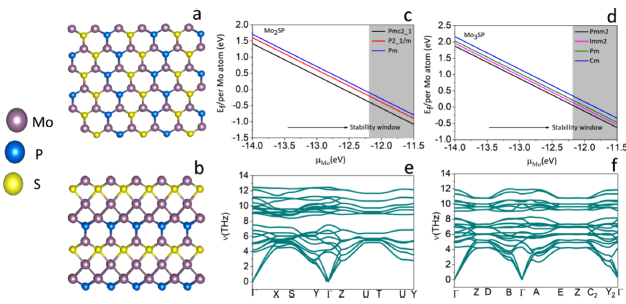
Dynamic Surface Reconstruction in Machine-Learning-Predicted Cu₃MoP Governs Selective CO Electroreduction to C₂⁺ Products
The Journal of Physical Chemistry C in press
Hafiz Ghulam Abbas, Jae Ryang Hahn
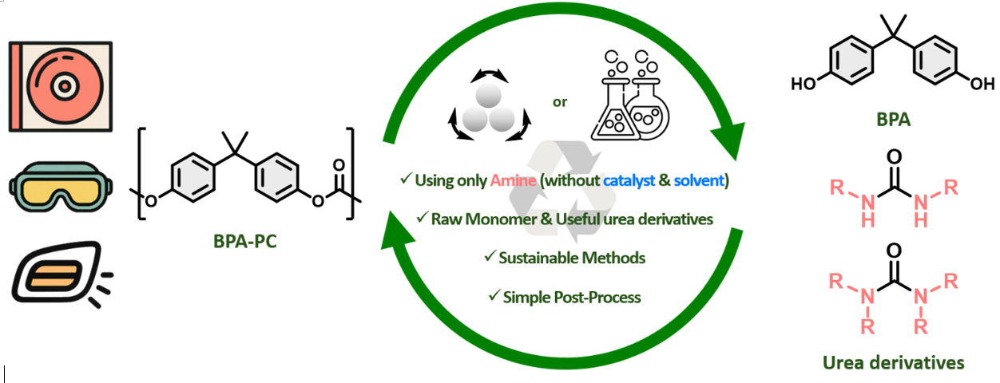
Catalyst- and Solvent-Free Depolymerization of Poly(bisphenol A Carbonate): Aminolysis
Green Chemistry ASAP
Hyo Won Lee, Ji Yeong Lee, Lars Borchardt, Jeung Gon Kim
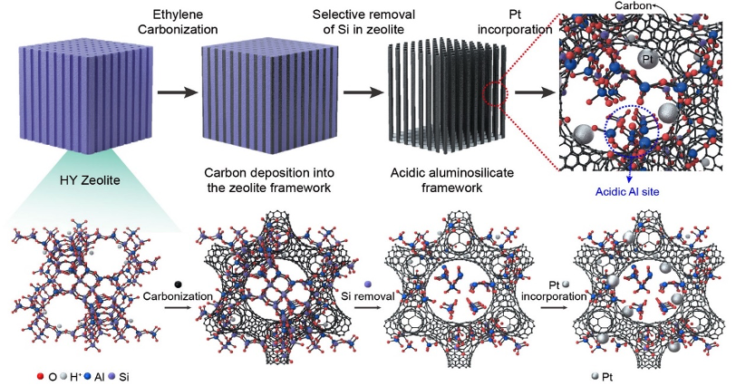
Revealing How Acid Sites Enhance the Electrocatalytic Glycerol Oxidation Performance on Pt Loaded Zeolite-Carbon Composite Materials
Advanced Materials in press (2025)
J. Y. Kim, S. No, J. Hwang, M. Yoo, H. Lee, Y. Kim, Y. Kim, Y. T. Kim, J.-C. Kim, J. W. Han, K. Kim, H. J. Kim

Lattice-Matched CdS@Ag2S Core–Shells on g-C3N4: A High-Performance Photocatalyst for Hydrogen Evolution and Pollutant Degradation under Visible Light
ACS Applied Energy Materials 8 (2025) 12969-12983
Santu Shrestha, Ga Hyeon Ha, Narayan Gyawali, Subas Acharya, Insup Lee, Harshvardhan Mohan, Taeho Shin, Jae Ryang Hahn
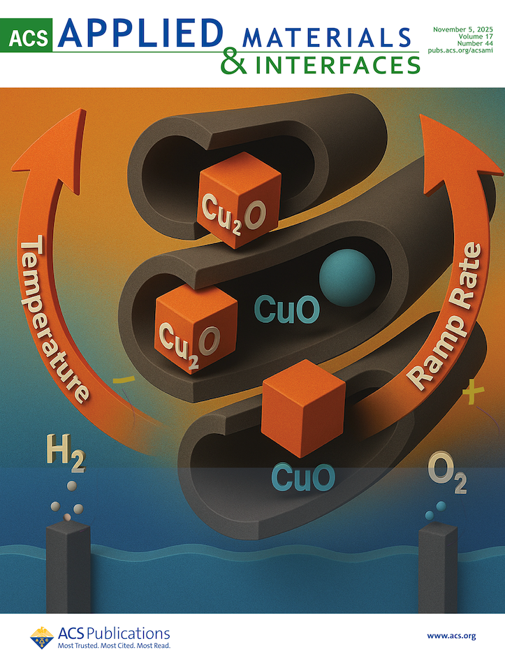
Temperature and Ramp Rate-Controlled Phase Engineering of Copper Oxides in Non-Crystalline Carbon Tubes for Enhanced Alkaline Water Splitting
ACS Applied Materials & Interfaces 17 (2025) 60426-60436 (selected as the Front Cover Art)
Narayan Gyawali, Hafiz Ghulam Abbas, Santu Shrestha, Subas Acharya, Kyoungsoo Kim, Kamal P. Sapkota, Jae Ryang Hahn
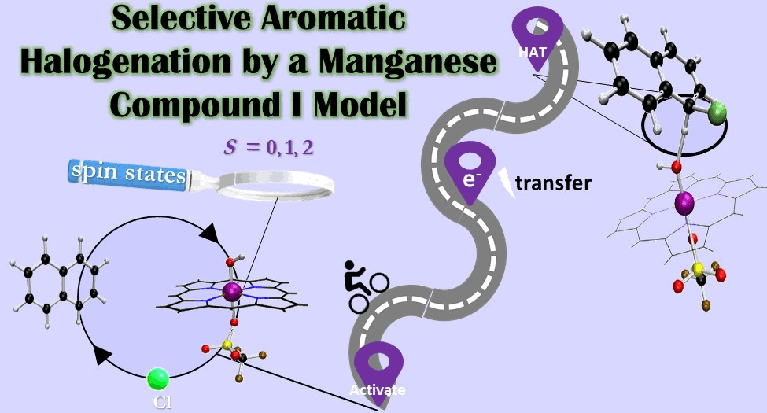
Selective aromatic halogenation by a manganese compound I model: A mimic of chloroperoxidase
Inorg. Chem. Front. 10 (2025) 5730-5740
L. Zhang, Steiny Russelisaac Premakumari, Maggie Ng, J. Zhang, Y.-M. Lee, S. Fukuzumi, Kyung-Bin Cho, W. Nam
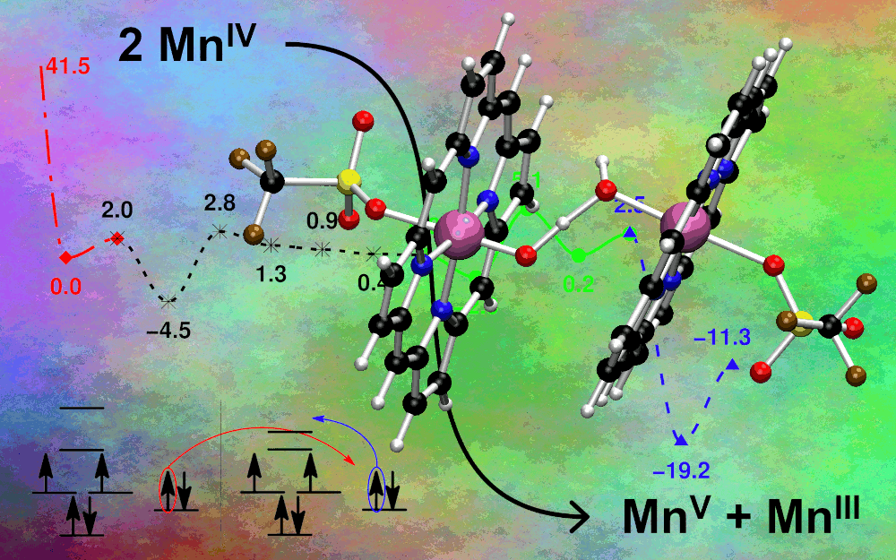
A Theoretical Study on the Acid-Catalyzed Disproportionation Reaction of a Mn(IV)-Oxo Porphyrin Complex
Bull. Korean Chem. Soc. 46 (2025) 784
Steiny Russelisaac Premakumari, Y. Choi, Maggie Ng, V. Kardam, W. Nam, Kyung-Bin Cho
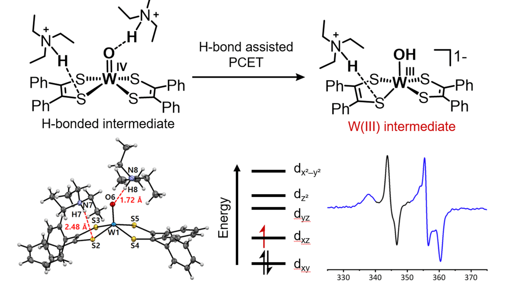
Hydrogen-Bond-Driven Proton-Coupled Electron Transfer and WIII-OH Formation in Bis-dithiolene Complex
Angew. Chem. Int. Ed. 64 (2025) e202506861
W. Lee, D. Um, Y. Baek, S. Hong, Youngseob Lee, J. Lee, J. Kim, S. H. Kim, Kyung-Bin Cho, J. Seo
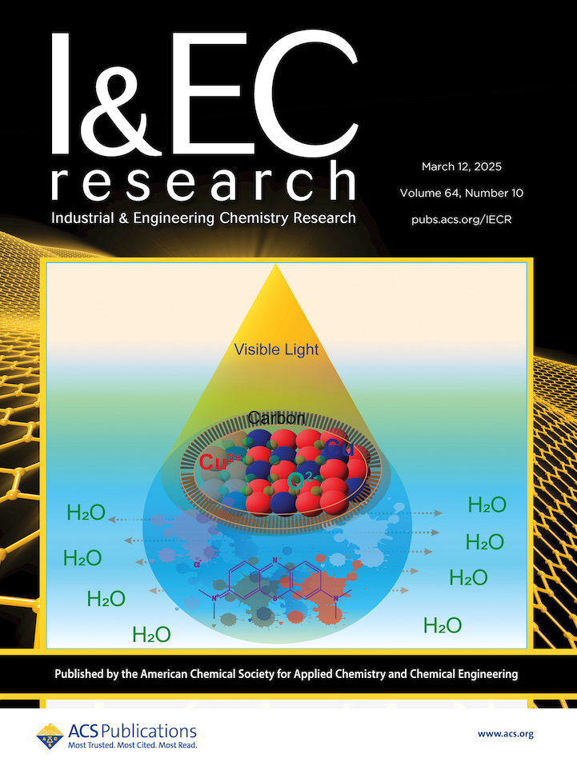
MOF-Derived In Situ Confinement of Copper/Copper Oxide Nanoparticles Inside a Carbon Tube: A Facile Morphologically Controlled Synthesis Strategy for Superior Visible-Light-Driven
Photocatalytic Efficiency
Industrial & Engineering Chemistry Research 64 (2025) 5212-5227 (selected as the Front Cover Art)
Narayan Gyawali, Insup Lee, Santu Shrestha, Subas Acharya, AASM Zahid, Kyoungsoo Kim, Kamal P. Sapkota, Jae Ryang Hahn
Machine Learning-Predicted Ternary Molybdenum Chalcogenophosphides for High-Efficiency Hydrogen Evolution Catalysis
The Journal of Physical Chemistry C 129 (2025) 322-331
Hafiz Ghulam Abbas, Jae Ryang Hahn
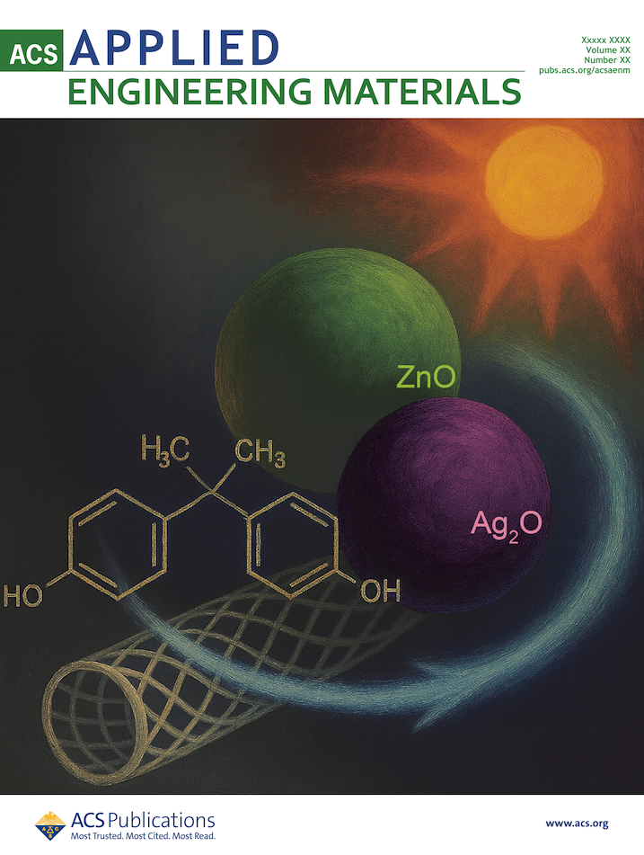
Facile Synthesis of a Composite Comprising Multiwalled Carbon Nanotubes with a p−n Heterojunction of Zinc Oxide and Silver Oxide: Applications to Efficient Photocatalytic Decomposition of Emerging Hazardous Pollutants Under Sunlight
ACS Applied Engineering Materials 3 (8) (2025) 2513-2527 (selected as the Front Cover Art)
Anil Pandey, Narayan Gyawali, Insup Lee, Santu Shrestha, Subas Acharya, AASM Zahid, Kamal Prasad Sapkota, Jae Ryang Hahn
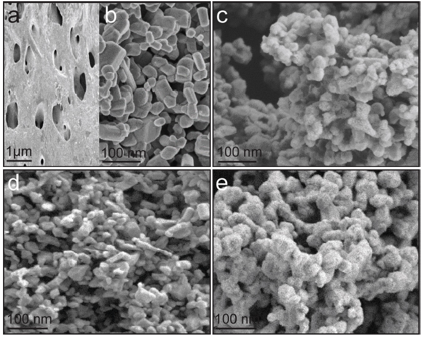
Visible-Light-Driven Co3O4/Nb2O5 Heterojunction Nanocomposites for Efficient Photocatalytic and Antimicrobial Performance in Wastewater Treatment
Molecules 30 (2025) 2561 (selected as the 2025 Editors' Choice Papers)
Anil Pandey, Santu Shrestha, Rupesh Kandel, Narayan Gyawali, Subas Acharya, Pujan Nepal,
Binod Gaire, Vince Fualo, Jae Ryang Hahn
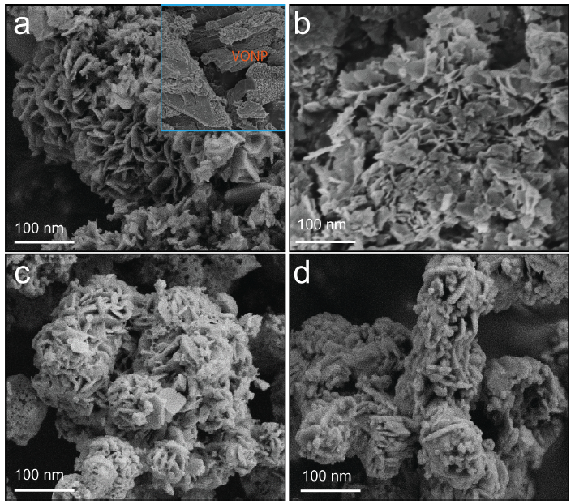
Harnessing BiOI/V2O5 Nanocomposites: Advanced Bifunctional Catalysts for Visible-Light Driven Environmental Remediation and Antibacterial Activity
Molecules 30 (2025) 2500
Anil Pandey, Narayan Gyawali, Devendra Shrestha, Insup Lee, Santu Shrestha, Subas Acharya, Pujan Nepal, Binod Gaire, Vince Fualo, Sabita Devi Sharma, Jae Ryang Hahn
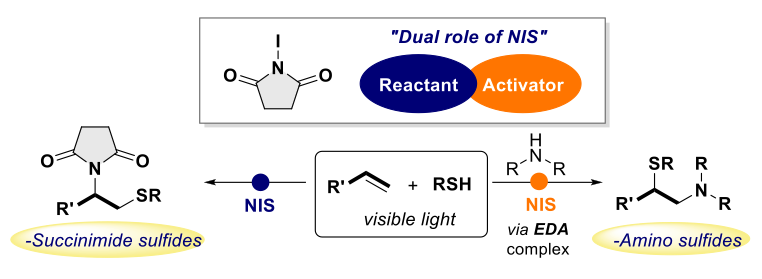
Visible Light-Mediated Selective Synthesis of β-Amino Sulfide Scaffolds via Dual Role of N-Iodosuccinimide
Organic Letters 27 (2025) 2687
Sujith K P, Anna Lee
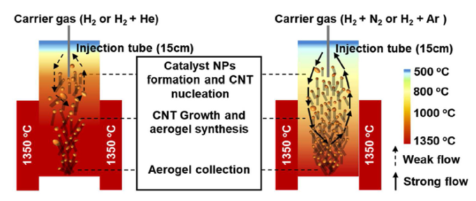
Development of carbon nanotube synthesis mechanism based on effects of thermo-physical properties of carrier gases
Carbon 234 (2025) 119929
R. Kumar, J. Park, S. Oh, Anna Lee, S. Jeon, Y. Cho, S. Kim
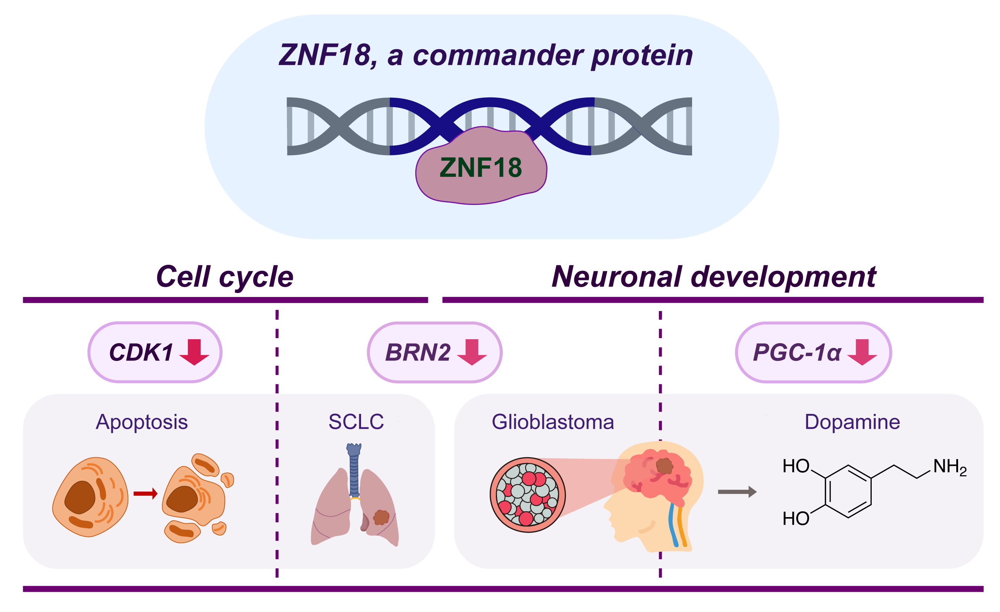
Controlling gene expression through five zinc finger domains of ZNF18
Protein Science 34 (2025) e70278
Park, S., Hwang Y., Eom, K. S., Cheong, J. S., Lee, S. J.
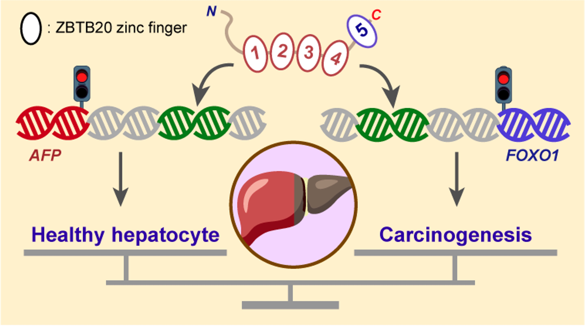
Regulation of carcinogenesis through multiple zinc fingers in ZBTB20
RSC Chemical Biology 6 (2025) 1165-1173
Kim, H., Hwang, Y., Cheong, J. S., Lee, S. J.
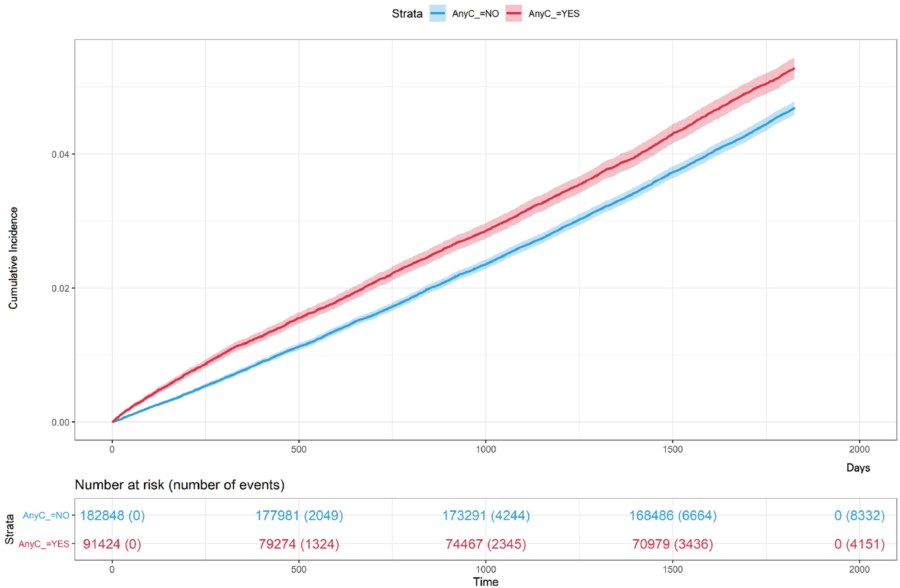
Risk of ischemic stroke in korean patients with Cancer: Insights from national health insurance data
Journal of Stroke and Cerebrovascular Disease 34 (2025) 108281
Moon, J., Rhyu, J. M., Jeong, C., Lee, S. J., Kim, J. S., Kang, H. G.
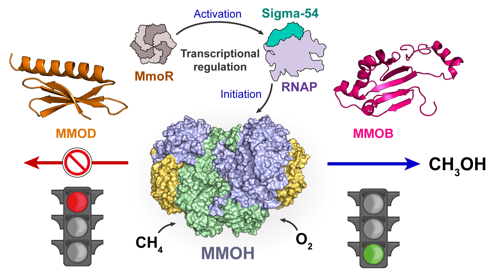
Orchestration of diverse components in soluble methane monooxygenase for methane hydroxylation
Chinese Journal of Catalysis 68 (2025) 204-212
Hwang, Y., Lee, D. -H., Lee, S. J.
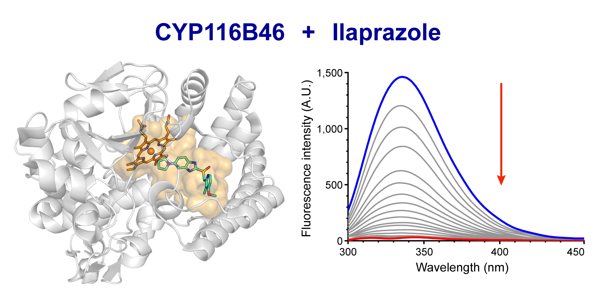
Biophysical interactions between self-sufficient cytochrome P450 from Tepidiphilus thermophilus and ilaprazole
Dalton Transactions 54 (2025) 1354-1359
You, J., Hwang, Y., Jeong, Y., Yeom, S. -J., Yun, C. -H., Kang, H. G., Lee, S. J.
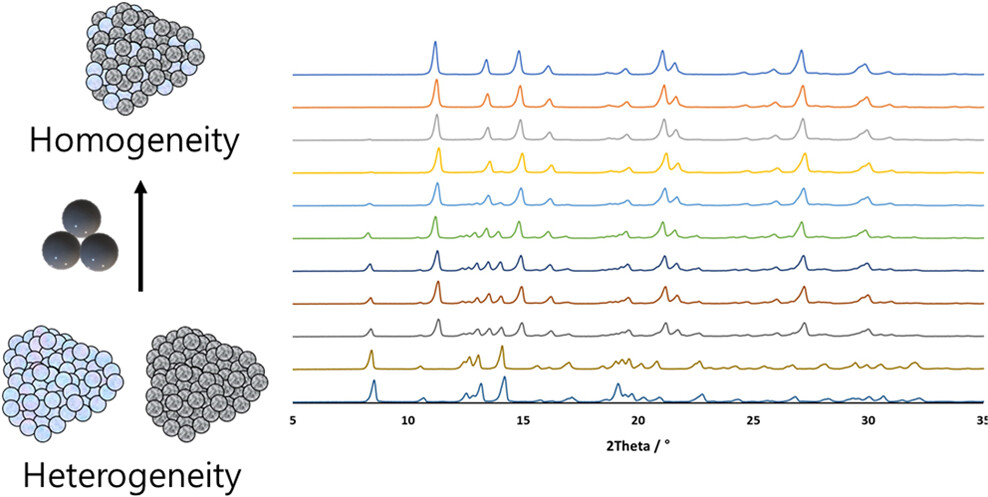
Insights into Mechanochemical Solid-State Ball Milling Reaction Transition: Monitoring Transition from Heterogeneous to Homogeneous Conditions
JACS Au 5 (2025) 2720-2727
Eun Sul Go, Eun Ji Hong, Ji Yeong Lee, Tomislav Stolar, Gregory I. Peterson, Franziska L. Emmerling, Kyoungsoo Kim, Jeung Gon Kim
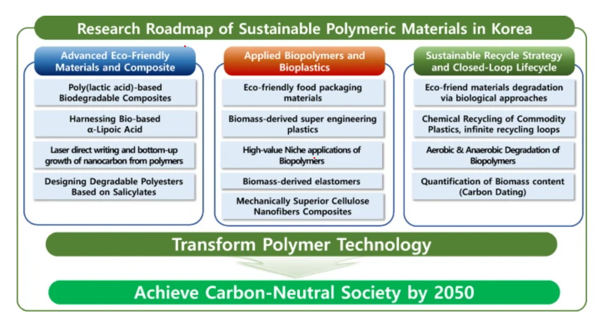
Research roadmap for sustainable polymeric materials in Korea
Macromolecular Research 33 (2025) 535-551
Jeong F. Kim, Hee Joong Kim, Jeyoung Park, Hyeonyeol Jeon, Jeung Gon Kim, Chungryong Choi, Ki-Ho Nam, Giyoung Shin, Sae Hume Park, Jihoon Shin, Dong-Ku Kang, Dongyeop X. Oh, Dong Yun Lee, Sung Woo Hong, Gi-Ra Yi
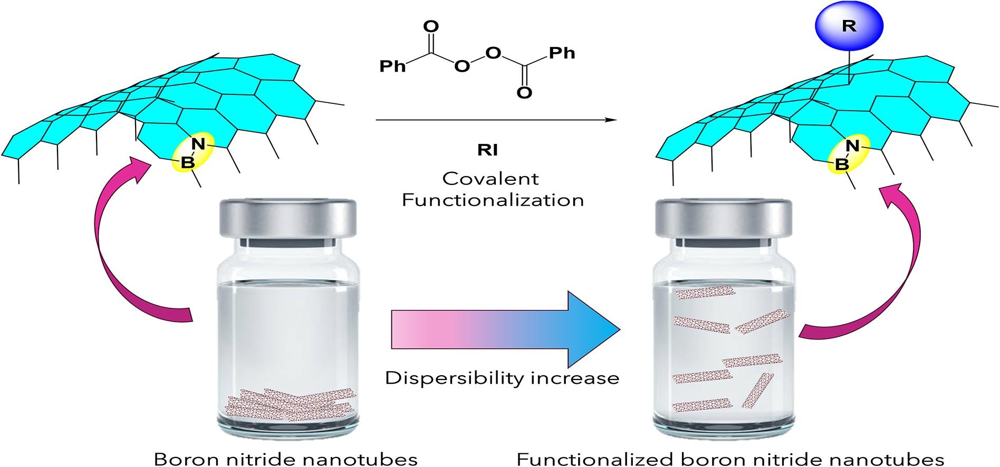
Covalent functionalization of boron nitride nanotubes by radical reagents
Applied Surface Science 682 (2025) 161749
Thang Quoc Huynh, Jeung Gon Kim, Seokhoon Ahn
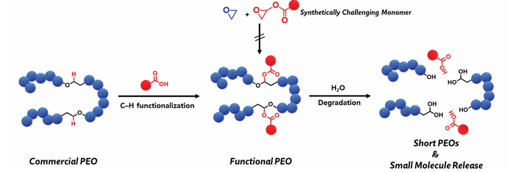
Postpolymerization Modifications of Poly(ethylene oxide) through C–H Functionalization: Embracing Functionality, Degradability, and Molecular Delivery
Macromolecular Rapid Communications 46 (2025) 2400613
Se Jong Kim, Eun Ji Hong, Nuri Kim, Nuri Kim, Minseong Kim, Aram Shin, Byeong-Su Kim, Dong Won Lee, Jeung Gon Kim

Nonenzymatically modified mRNA for regulating translation and apoptosis
by modulating Cancer epigenetics
Bioorganic Chemistry157 (2025) 108328
Tasnima Alam Asa, Chabungbam Dhurbachandra Singh, Thokchom Simander Singh,Saleh Salahi, Kazi Morshed Alom, Young Jun Seo
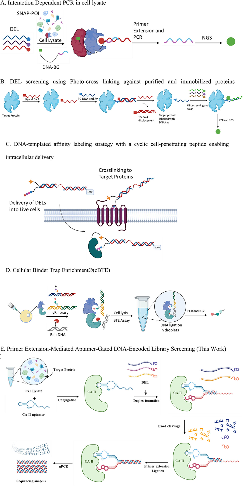
Primer Extension-Mediated Aptamer-Gated DNA-Encoded Library
Screening for Physiologically Relevant Ligand Discovery
Journal of Medicinal Chemistry68 (2025) 16227
Pranay Yadav, Tasnima Alam Asa, Miray Cebeci, Mingyu Choi, and Young Jun Seo
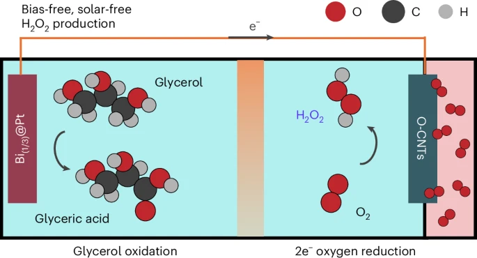
Unassisted electrochemical H2O2 production coupled to glycerol oxidation
Nature Synthesis 4 (2025) 931-939
Dongrak Oh, Seon Woo Hwang, Dong Yeon Kim, Jesse E Matthews, Jinyoung Lee, Jaime E Avilés Acosta, Sang-Won Lee, Yi Xu, Ara Cho, Dong Un Lee, Thomas F Jaramillo, Dong-Hwa Seo, Ji-Wook Jang
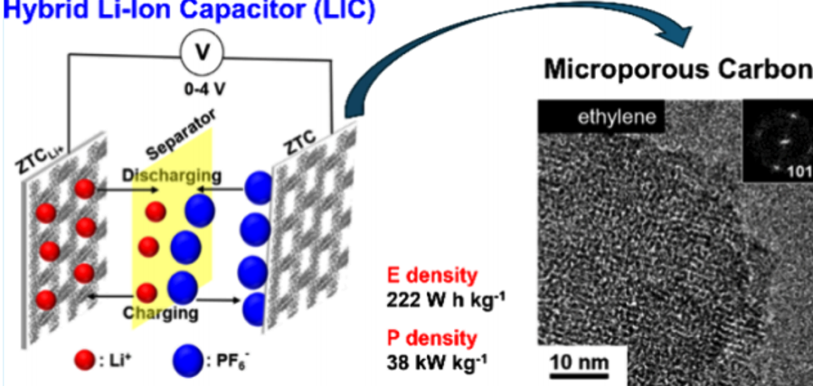
3D Graphene-like Microporous Carbon for Ultralong-Life Lithium-Ion Capacitors
ACS Applied Electronic Materials 8 (2025) 9489
H. Park, R. K. Bera, H. Yoon, K. Kim
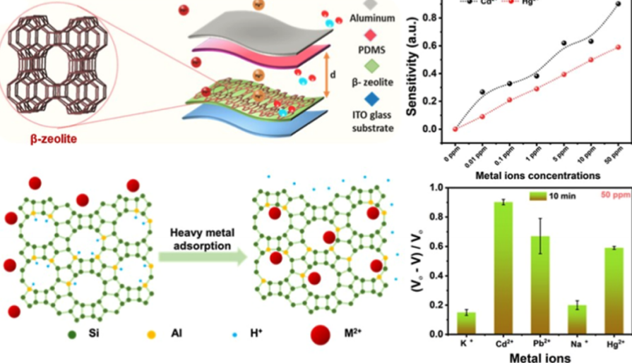
Zeolite-Decorated Triboelectric Sensors for Heavy Metal Contaminant Detection
ACS Applied Electronic Materials 7 (2025) 3439
R. A. Shaukat, A. Cha, A. M. Tamim, H. Kim, G.-T. Hwang, H. E. Lee, Z.-H. Lin, K. Kim, C. K. Jeong
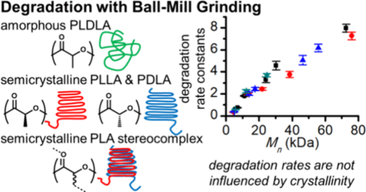
Influence of Crystallinity on the Mechanochemical Degradation of Poly(lactide) With Ball-Mill Grinding
Macromolecules 57 (2024) 9960-9964
Somin Cha, Jeung Gon Kim, Gregory I. Peterson

Multifunctional Polymer Synthesis via Sequential Post-Polymerization Modification Using Single Aldehyde Repeat Unit: Allylation and Orthogonal Esterification and Thiol-ene Reaction
ACS Macro Letters 13 (2024) 1418-1424
Hyo Won Lee, Jeung Gon Kim
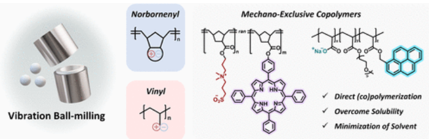
Mechanochemical Synthesis of Ionic Polymers: Solid-State Ball-milling Polymerization for Unrestricted Solubility Enabling Copolymerization of Immiscible Monomers
Macromolecules 57 (2024) 9408-9418
Gue Seon Lee, Hyun Sub Lee, Nuri Kim, Hyun Gyu Shin, Yun Ha Hwang, Seung Jae Lee, Jeung Gon Kim
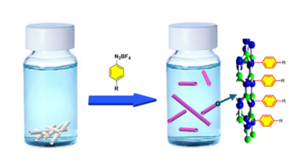
Facile covalent functionalization of boron nitride nanotubes via coupling reaction
Nanoscale Advances 6 (2024) 3904-3910
Thang Quoc Huynh, Minsung Kang, Jeung Gon Kim, Seokhoon Ahn
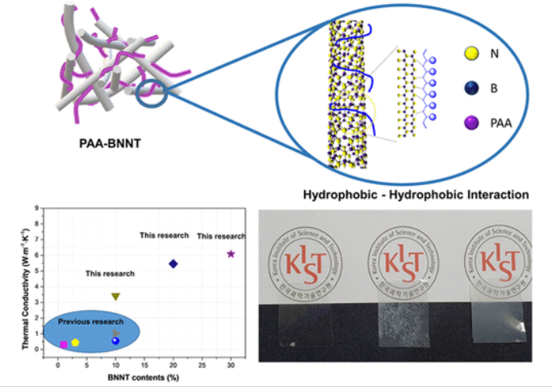
Physical Adsorption of Polyacrylic Acid on Boron Nitride Nanotube Surface and Enhanced Thermal Conductivity of Poly(vinyl alcohol) Composites
ACS Omega 9 (2024) 31925-31932
Thang Quoc Huynh, Jeung Gon Kim, Seokhoon Ahn
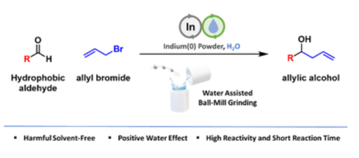
Mechanochemical Indium(0)-mediated Barbier allylation of Carbonyl Compounds: Unexpected Immiscible Water Additive Effect for Hydrophobic Reagents
RSC Mechanochemistry 1 (2024) 158-161
Nuri Kim, Eun Sul Go, Jeung Gon Kim
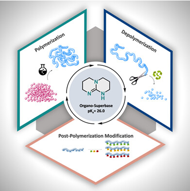
Triazabicyclodecene: A versatile catalyst for polymer synthesis
Journal of Polymer Science 62 (2024) 42-91
Jeung Gon Kim, Gue Seon Lee, Anna Lee
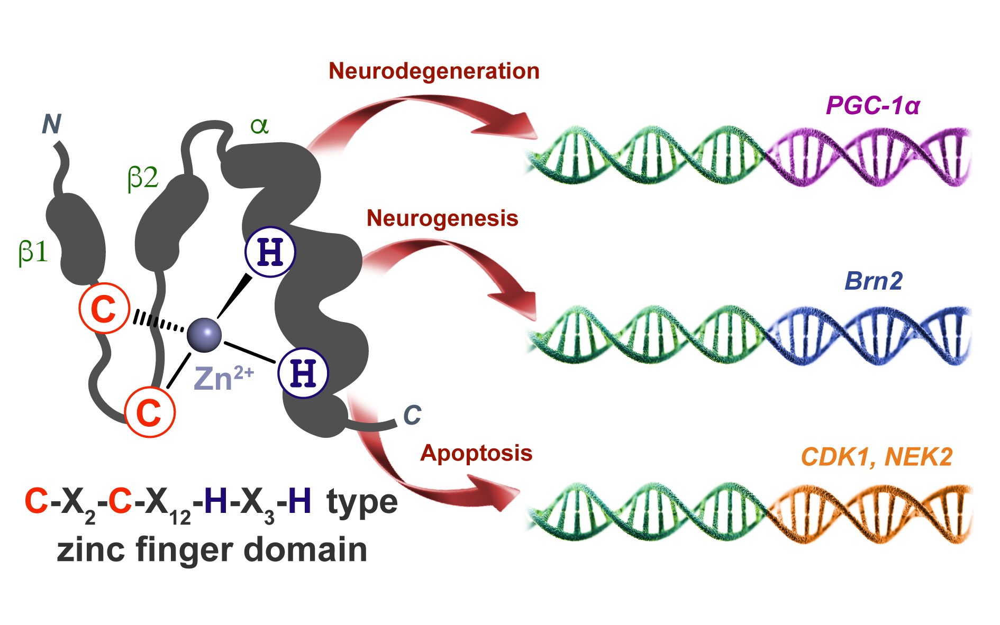
Regulation of classical zinc fingers for neuronal signaling in the central nervous system
Bulletin of the Korean Chemical Society 45 (2024) 977-986
Hwang, Y., Park, S., Kim, H., Park, Y., Kang, H. G., Lee, D. -H., Lee, S. J.
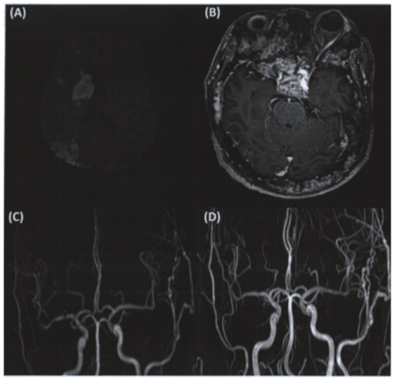
Acute cerebral infarction in a patient with Paget`s disease
Neurological Sciences 45 (2024) 5951-5953
Kang, Y. E., Kim S. Y., Lee, S. J., Shin, B. -S., Kang, H. G.
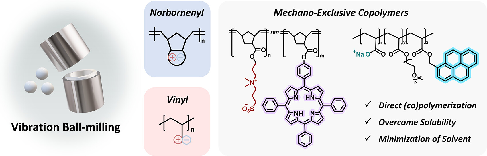
Mechanochemical Synthesis of Ionic Polymers: Solid-State Ball-milling Polymerization for Unrestricted Solubility Enabling Copolymerization of Immiscible Monomers
Macromolocules 57 (2024) 9408-9418
Lee, G. S., Lee, H. S., Kim, N., Shin, H. G., Hwang, Y. H., Lee, S. J., Kim, J. G.
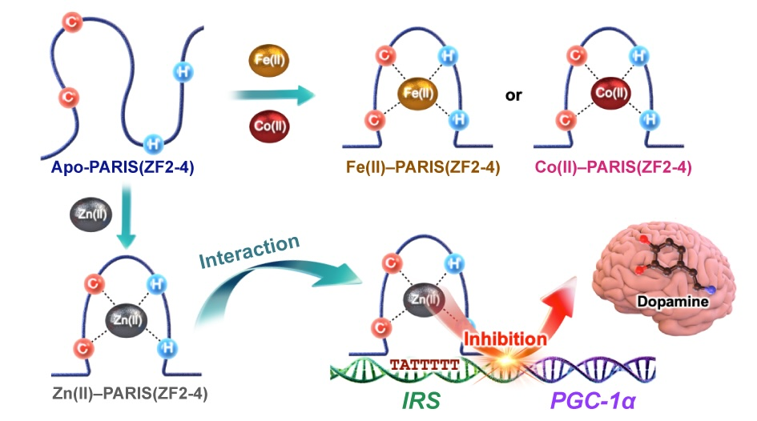
Decoding the Parkinson’s Symphony: PARIS, Maestro of Transcriptional Regulation and Metal Coordination for Dopamine Release
ACS Chemical Neuroscience 15 (2024) 447-455
Hwang, Y., Islam, A. K. M. M., Park, S., Kang, H. G., Lee, C., Lim, M. H., and Lee, S. J
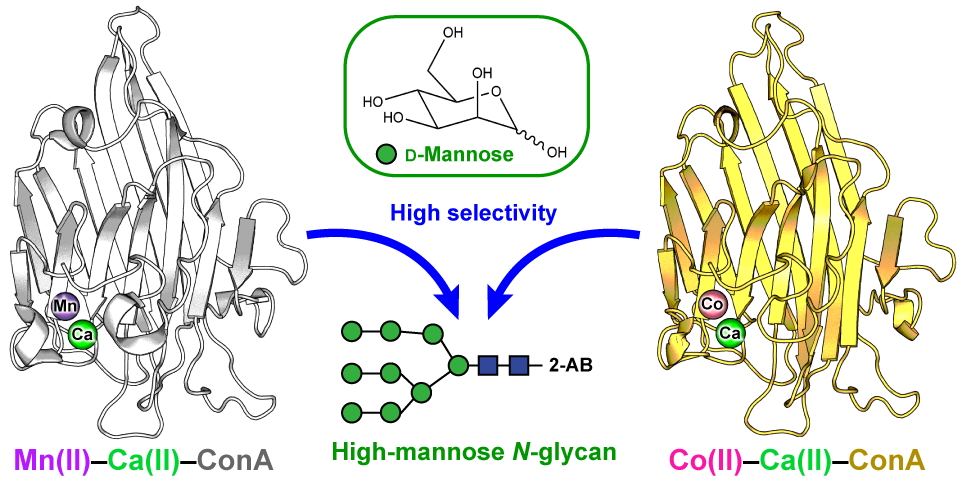
Selective interactions of Co2+–Ca2+–concanavalin A with high mannose N-glycans
Dalton Transactions 53 (2024) 428-433
Hwang, Y., Jeong, J. -H., Lee, D. -H., and Lee, S. J
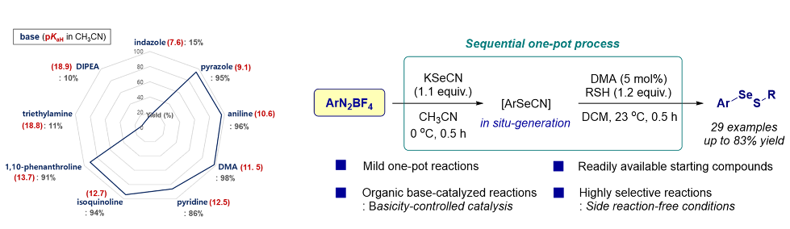
Base-Catalyzed One-Pot Synthesis of Selenosulfides: A Base Basicity-Controlled Approach
The Journal of Organic Chemistry 89 (2024) 748
S. Lee, J. Sim, Anna Lee
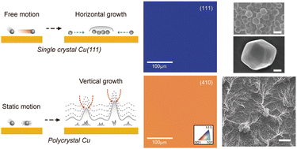
Horizontal lithium growth driven by surface dynamics on single crystal Cu (111) foil
Energy Environ. Sci. 17 (2024) 6521-6532
Min-Ho Kim, Dong Yeon Kim, Yunqing Li, Juyoung Kim, Min Hyeok Kim, Jeongwoo Seo, Benjamin V Cunning, Taewon Kim, Sang-Wook Park, Rodney S Ruoff, Dong-Hwa Seo, Sunghwan Jin, Hyun-Wook Lee
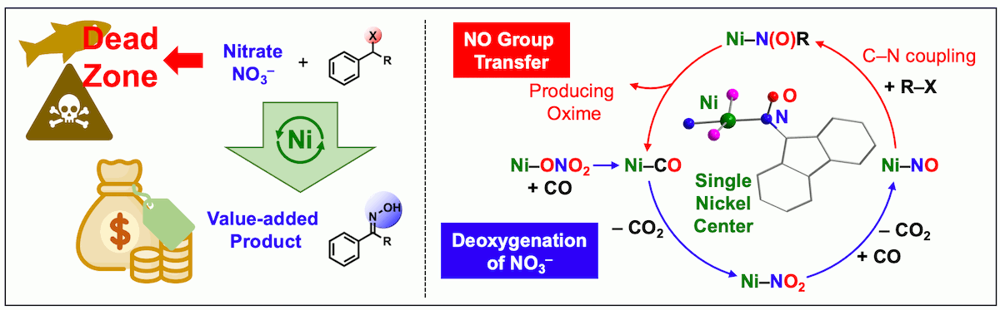
Nitrate Upcycling Mediated by Organonickel Catalysis
Angew. Chem. Int. Ed. 63 (2024) e202408457
S. Padmanaban, J. Chun, Youngseob Lee, Kyung-Bin Cho, J. Choi, Y. Lee
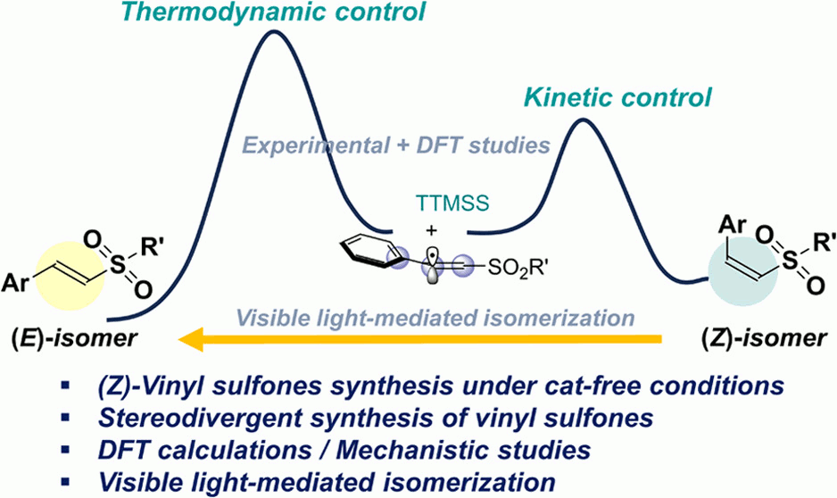
Hydrosulfonylation of Alkynes for Stereodivergent Synthesis of Vinyl Sulfones: Synthetic Strategy and Mechanistic Insights
J. Am. Chem. Soc. 146 (2024) 14816
S. K. P., Steiny Russelisaac Premakumari, Kyung-Bin Cho, A. Lee
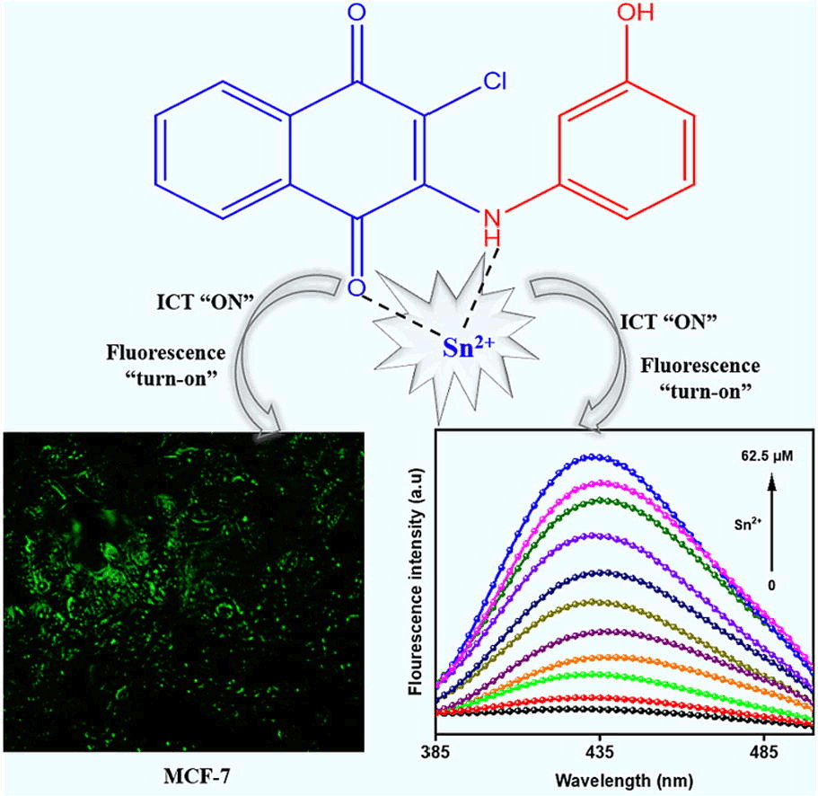
Strong intramolecular charge-transfer effect strengthening naphthoquinone-based chemosensor: Experimental and theoretical evaluation
Spectrochim. Acta A Mol. Biomol. Spectrosc. 311 (2024) 123908
D. Sayfiddinov, R. S. Kumar, V. K. Kaliannagounder, P. Ravichandiran, Kyung-Bin Cho, C. S. Kim, C. H. Park, K. S. Shim, H. W. Choi, B.-H. Park, M.-K. Han, D. J. Yoo
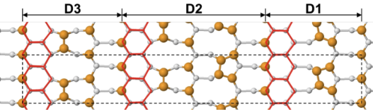
Doping-induced spin polarization on the pristine Si surface: a Si(5 5 12)2 × 1 case
Journal of the Korean Physical Society 85 (2024) 712-720
Kangmo Yeo, Jae Ryang Hahn & Sukmin Jeong
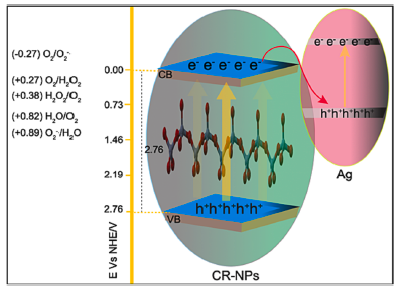
Silver decoration of Cr2O3 nanoparticles: Facile preparation of Cr2O3 nanoparticles and Ag–Cr2O3 nanocomposites and characterization of their antibacterial activity and ability to photocatalytically degrade organic wastes under visible light
Journal of Photochemistry & Photobiology, A: Chemistry 447 (2024) 115251
Narayan Gyawali, Rupesh Kandel, Insup Lee, Santu Shrestha, Anil Pandey, Jeasmin Akter, Jae Ryang Hahn
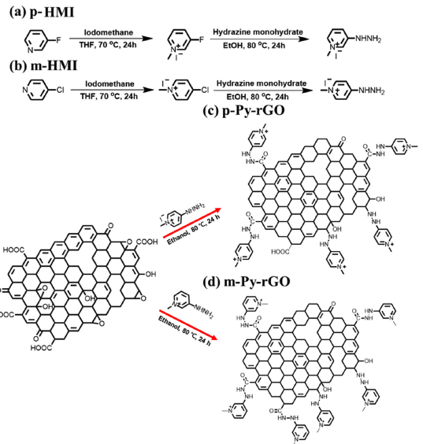
Highly water-dispersible methylpyridinium salt functionalized reduced graphene oxide and poly(vinyl alcohol) composites
Composites Part B 271 (2024) 111142
Sangyoon Lee, Jeong-Un Jin, Jae Ryang Hahn, Seongwoo Ryu, Nam-Ho You
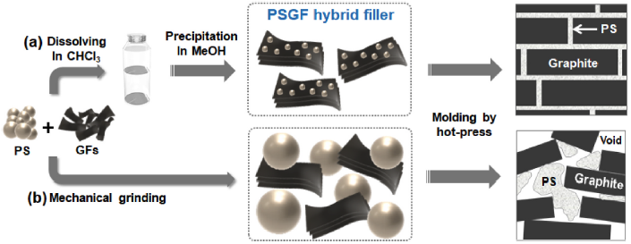
Nanoscale brick and mortar strategy for mechanically strong multifunctional composites with extremely high filler-loading
Carbon 226 (2024) 119198
Hyun Oh Jeong, Md Monir Hossain, Hongjin Lim, Young-Kyeong Kim, Jaeho Kim, Hyeon Dam Jeong, Hyunjin Cho, Munju Goh, Myung Jong Kim, Nam-Ho You, Kwang-Un Jeong, Jae Ryang Hahn, Se Gyu Jang
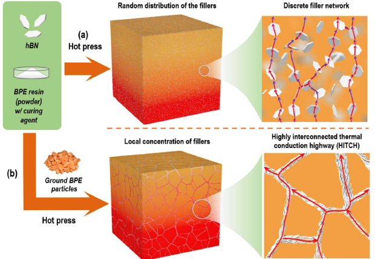
Highly Interconnected Thermal Conduction Highway for Highly Thermally Conductive and Mechanically Strong Polymeric Composites
ACS Appl. Mater. Interfaces 16 (2024) 65307-65318
Md. Monir Hossain, Young-Kyeong Kim, Hongjin Lim, Ik Jae Lim, Yongbi Joo, Hyeon-Dam Jeong, Jaeho Kim, Md. Akherul Islam, Dongwon Kim, Hyunjin Cho, Jae Ryang Hahn, Se Gyu Jang
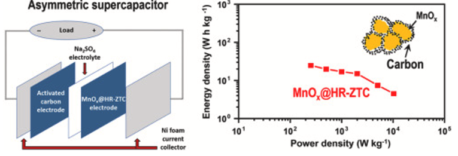
Hierarchically porous zeolite-templated carbon embedded with manganese oxide for long-cycling asymmetric supercapacitor
Microporous and Mesoporous Materials 369 (2024) 113050
S. Khan, H. Park, K. Kim, H. Park, R. Ryoo
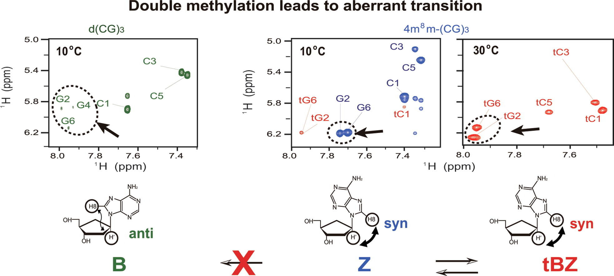
Entropy-driven conformational transition of flexible Z-DNA to a novel
non-B helix by double-methylated guanosine
Journal of Molecular Liquids383 (2023) 122071
Kwang-Im Oh, Ho-Seong Jin, Thananjeyan Balasubramaniyam, Ji-Yeon Shin ,Seo-Ree Choi, Young Jun Seo, Byeong-Seon Kim, Yeo-Jin Seo, Seung-Ryong Kwon, Nak-Kyoon Kim, Joon-Hwa Lee

Rolling circle transcription/G-quadruplex/QnMorpholine probe for highly
selective and sensitive detection of alkaline phosphatase activity
Analytical Biochemistry 665 (2023) 115050
Kazi Morshed Alom, Young Jun Seo
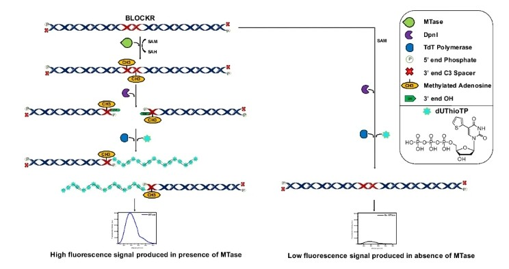
Blocker‑dUThiophene poly tailing‑based method for assessing methyl
transferase activity
Analytical and Bioanalytical Chemistry 415 (2023) 4631
Kazi Morshed Alom, Young Jun Seo

Multiple gene detection using a selective fluorophore probe–RNA hybridization/graphene oxide quenching system
Analyst 148 (2023) 3622
Tasnima Alam Asa, Young Jun Seo
Triple ligation-based formation of a G-quadruplex for simultaneous detection of multiple miRNAs
Analyst 148 (2023) 4283
Kazi Morshed Alom, Young Jun Seo
-halogenated pyrimidine.jpg)
mRNA incorporation of C(5)-halogenated pyrimidine ribonucleotides and
induced high expression of corresponding protein for the development of
mRNA vaccine
Bioorganic Chemistry141 (2023) 106897
Chabungbam Dhurbachandra Singh, Kazi Morshed Alom, Dinesh Kumar Kannan, Thokchom Simander Singh, Subhashish Samantaray, Guralamatta Siddappa Ravi Kumara, Young Jun Seo
High-performance electrochemical detection of glucose in human blood serum using a hierarchical NiO2 nanostructure supported on phosphorus doped graphene
Mater. Today Chem. 34 (2023) 101765
S. Tamilarasi, R. S. Kumar, Kyung-Bin Cho, C.-J. Kim, D. J. Yoo
“Lighting up” fluoride: cellular imaging and zebrafish model interrogations using a simple ESIPT-based mycophenolic acid precursor-based probe
Analyst 148 (2023) 2609
N. Jain, P. M. Sonawane, H. Liu, A. Roychaudhury, Youngseob Lee, J. An, D. Kim, D. Kim, Y. Kim, Y.-C. Kim, Kyung-Bin Cho, H.-S. Park, C.-H. Kim, D. G. Churchill
A Manganese Compound I Model with a High Reactivity in the Oxidation of Organic Substrates and Water
J. Am. Chem. Soc. 145 (2023) 8319
L. Zhang, M. S. Seo, Y. Choi, R. Ezhov, O. Maximova, D. Malik, Maggie Ng, Y.-M. Lee, R. Sarangi, Y. Pushkar, Kyung-Bin Cho, W. Nam
Calculating the excited state reactivity of a manganese(IV)-oxo species with a negatively charged ligand
Bull. Korean Chem. Soc. 44 (2023) 546
M.Ng, Kyung-Bin Cho
Controlled release of Ag+ ions to human cancer cells selectively neutralized with silver nanoparticles of different sizes produced by a green synthesis method
Journal of Molecular Structure 1294 (2023) 136384
Md. Akherul Islam, Thoufiqul Alam Riaz, Md. Amjad Hossain, Insup Lee, Jeasmin Akter, Santu Shrestha, Narayan Gyawali, Anil Pandey, Syawalina Chaizul, Vince Fualo, Jae Ryang Hahn
Noncovalently functionalized boron nitride nanotubes and polymer nanocomposites with water-soluble poly (amic acid) salt
Applied Surface Science 623 (2023) 157082
Jeong-Un Jin, Se Gyu Jang, Seokhoon Ahn, Dae-Yoon Kim, Jae Ryang Hahn, Nam-Ho You
Nanostructured carbon and copper oxide: Synchronous and facile synthesis from a single source and multidimensional applications
Chemical Engineering Journal 471 (2023) 144603
Jeasmin Akter, Md. Abu Hanif, Insup Lee, Santu Shrestha, Anil Pandey, Narayan Gyawali, Syawalina Chaizul, Vince Fualo, Lee Ku Kwac, Jae Ryang Hahn
Unexpected penetration of CO molecule into zeolitic micropores almost plugged by CuCl via π-complexation of CO-CuCl
ACS Applied Materials & Interfaces 15 (2023) 27411
Chan Hyun Lee, Kwangsoo Kim, Jisoo Kim, Kanghee Cho, Sang-Sup Han, Hyun Wook Kim, Ki Bong Lee, Byung-Hyun Kim, Jong Hyeok Park, Kyoungsoo Kim, and Jong-Ho Park
Cobalt–molybdenum–selenide nanoflowers for bifunctional visible light photocatalysis
Chemosphere 326 (2023) 138436
Harshavardhan Mohan, Ga Hyeon Ha, Gitae Kim, Hye Rin Lee, Hakju Lee, Kyoungsoo Kim, Taeho Shin
Post-treatment of carbon by interparticle spillover hydrogen for sustainable adsorption of volatile organic compounds under humid conditions
Chemical Engineering Journal 477 (2023) 147028
Gayoung Lee, Sunjae No, Kyoungsoo Kim, Changbum Jo
Electronic Effect on Phenoxide Migration at a Nickel(II) Center Supported by a Tridentate Bis(phosphinophenyl)phosphido Ligand
Inorg. Chem. 62(7) (2023) 3007-3017
K. Lee, N. Kim, K.-B. Cho, and Y. Lee
Two-Electron-Induced Reorganization of Cobalt Coordination and Metal−Ligand Cooperative Redox Shifting Co(I) Reactivity toward CO2 Reductions
Inorg. Chem. 62(5) (2023) 2326-2333
S. Song, W. Lee, Y. Lee, K.-B. Cho, J. Lee, and J. Seo
Postpolymerization Modification of Sterically Demanding Poly(methacrylic acid) with Allene Sulfonamides
Polymer Chemistry 14 (2023) 111-115
Hyun Gyu Shin, Tapas R. Pradhan, Jin Kyoon Park, Jeung Gon Kim
Mechanochemical Solid-State Vinyl Polymerization with Anionic Initiator
Faraday Discussions 241 (2023) 306-340
Kwangho Yoo, Gue Seon Lee, Hyo Won Lee, Byeong-Su Kim, Jeung Gon Kim
Multiple ligation–Assisted recombinase polymerase amplification for highly sensitive and selective colorimetric detection of SARS-CoV-2
Talanta 252 (2023) 123835
Tasnima Alam Asa, Pradeep Kumar, Jaehyeon Lee, Young Jun Seo
Copper complex of a thienyl-hydrazone rhodamine derivative is a highly selective colorimetric sensor for pyrophosphate
Tetrahedron Letters 89 (2022) 153606
Pradeep Kumar, Guralamatta Siddappa Ravi Kumara, Young Jun Seo
Carbon-Based Ternary Nanocomposite: Bullet Type ZnO–SWCNT–CuO for Substantial Solar-Driven Photocatalytic Decomposition of Aqueous Organic Contaminants
Molecules 27 (2022) 8812 (invited paper)
Santu Shrestha, Kamal Prasad Sapkota, Insup Lee, Md Akherul Islam, Anil Pandey, Narayan Gyawali, Jeasmin Akter, Harshavardhan Mohan, Taeho Shin, Sukmin Jeong, Jae Ryang Hahn
Functional Poly(meth)acrylate Synthesis: Post-polymerization Modification Approach
Macromol. Res. 30 (2022) 757-765 (invited review)
Kim, J. G. and Shin, H. G
Mechanochemical Ring-Opening Metathesis Polymerization: Development, Scope, and Mechano-Exclusive Polymer Synthesis
Chem. Sci. 13 (2022) 11496-11505
Lee, G. S.; Lee, H. W.; Lee, H. S.; Do, T.; Do, J.-L.; Lim, J.; Peterson, G. I.; Friščić, T.; Kim, J. G.
Facile Preparation of a Bispherical Silver–Carbon Photocatalyst and Its Enhanced Degradation Efficiency of Methylene Blue, Rhodamine B, and Methyl Orange under UV Light
Nanomaterials 12 (2022) 3959 (invited paper)
Md. Akherul Islam, Jeasmin Akter, Insup Lee, Santu Shrestha, Anil Pandey, Narayan Gyawali, Md. Monir Hossain, Md. Abu Hanif, Se Gyu Jang, Jae Ryang Hahn
Contorted hexabenzocoronene derivatives as a universal organic precursor for dimension-customized carbonization
Carbon 200 (2022) 21-27
Kim, Y.; Kang, M.; Kim, Y. H.; Suh, E.-K.; Yang, M.; Cho, S. Y.; Jeon, D.-Y.; Kim, J. G.; Kim, J.; Ahn, S.
Saturated-Blue-Emitting [3+2+1] Coordinated Iridium(III) Complexes for Vacuum-Deposited Organic Light-Emitting Devices
Journal of Materials Chemistry C 10 (2022) 14616-14625
M. Zhang, M. Ng, C. Wu, K. Tong, W. Li, Y. Wu, C. Yang, M. Wang, M.-C. Tang and G. Wei
Low Efficiency Roll-Off Blue Phosphorescent OLEDs at High Brightness Based on [3+2+1] Coordinated Iridium (III) Complexes
Advanced Optical Materials 10 (2022) 2200356
C. Wu, K.-N. Tong, M. Zhang, M. Ng, S.-W. Zhang, W. Cai, S. Jung, Y. Wu, C. Yang, M.-C. Tang, G. Wei
Bromoacetic Acid-Promoted Nonheme Manganese-Catalyzed Alkane Hydroxylation Inspired by α-Ketoglutarate-Dependent Oxygenases
ACS Catal. 12 (2022) 6756-6769
J. Chen, J. Yao, X.-X. Li, Y. Wang, W. Song, K.-B. Cho, Y.-M. Lee, W. Nam, B. Wang
The Mechanochemical Synthesis of Polymers
Chem. Soc. Rev. 51 (2022) 2873–2905
A. Krusenbaum, S. Grätz, G. T. Tigineh, L. Borchardt, J. G. Kim
Synthesis and Self-Assembly of Poly(vinylpyridine)-Containing Brush Block Copolymers: Combined Synthesis of Grafting-through and Grafting-to Approaches
Macromolecules 55 (2022) 1590–1599
Kim, E. J.; Shin, J.; Lee, G. S.; Kim, S.; Park, S.; Park, J.; Choe, Y.; Lee, D.; Choi, J.; Bang, J.; Kim, Y. H.; Li, S.; Hur, S.-M.; Kim, J. G.; Kim, B.
Heme compound II models in chemoselectivity and disproportionation reactions
Chemical Science 13 (2022) 5707-5717
R. Gupta, X.-X. Li, Y. Lee, M. S. Seo, Y.-M. Lee, S. Yanagisawa, M. Kubo, R. Sarangi, K.-B. Cho, S. Fukuzumi and W. Nam
Structural effect of polyimide precursor on highly thermally conductive graphite films
ACS Omega 7(29) (2022) 25565-25572
Jeong-Un Jin, Jae Ryang Hahn, Nam-Ho You
Enhancement of visible-light photocatalytic activity of ZnO/ZnS/g-C3N4 by decreasing the bandgap and reducing the crystallite size via facile one-step fabrication
Journal of Photochemistry & Photobiology, A: Chemistry 431 (2022) 114066
Md. Abu Hanif, Jeasmin Akter, Md. Akherul Islam, Insup Lee, Kamal Prasad Sapkota, Santu Shrestha, Anil Pandey, Narayan Gyawali, Jae Ryang Hahn
Diacetylene-containing Dual-functional Liquid Crystal Epoxy Resin: Strategic Phase Control for Topochemical Polymerization of Diacetylenes and Thermal Conductivity Enhancement
Macromolecules 55 (2022) 4402-4410
Md. M. Hossain, A. I. OLAMILEKAN, H-O. Jeong, H. Lim, Y-K. Kim, H. Cho, H. D. Jeong; Md. A. Islam; M. Goh; N-H You; M. J. Kim, S. Choi, J. R. Hahn, H. Yeo, S. G. Jang
Directly arylated oligonucleotides as fluorescent molecular rotors for probing DNA single-nucleotide polymorphisms
Bioorganic & Medicinal Chemistry 56 (2022) 116617
Guralamatta Siddappa Ravi Kumara, Young Jun Seo
Cu2+–diethylaminosalicylaldehyde self-dimer for regulation of DNA amplification with changes in fluorescence
Sensors and Actuators: B. Chemical 369 (2022) 132270
Guralamatta Siddappa Ravi Kumara, Vardhaman Babagond, Young Jun Seo
Unnatural nucleotide-based rkDNA probe combined with graphene oxide for detection of alkaline phosphatase activity
Bioorganic & Medicinal Chemistry Letters 64 (2022) 128694
Kazi Morshed Alom, Guralamatta Siddappa Ravi Kumara, Young Jun Seo
Dual‑site ligation‑assisted loop‑mediated isothermal amplification (dLig‑LAMP) for colorimetric and point‑of‑care determination of real SARS‑CoV‑2
Microchimica Acta 189 (2022) 176
Moon Hyeok Choi, Jaehyeon Lee, Young Jun Seo
An end-on bis(μ-hydroxido) dimanganese(II,III) azide complex for C–H bond and O–H bond activation reactions
Chem. Commun. 58 (2022) 4623-4626
H. Jeon, J. Kim, J. Kim, K.-B. Cho, S. Hong
Structure and Reactivity of Non-Porphyrinic Terminal Manganese(IV)–Hydroxide Complexes in Oxidative Electrophilic Reaction
Inorg. Chem. 61 (2022) 4292-4301
Y. Park, S. Kim, K. Kim, B. Shin, Y. Jang, K.-B. Cho, J. Cho
Nickel Catalyzed NO Group Transfer Coupled with NOx Conversion
J. Am. Chem. Soc. 144 (2022) 4585-4593
S. Padmanaban, J. Choi, H. Vazquez-Lima, D. Ko, D. Yoo, J. Gwak, K.-B. Cho, Y. Lee
Pd@PdS core shell nanocubes for photocatalytic degradation of methylparaben
Materials Letters 309 (2022) 131444
S. Yoo, H. Mohan, H. S. Oh, G. Kim, J. R. Hahn, T. Shin
Point‑of‑care COVID‑19 testing: colorimetric diagnosis using rapid and ultra‑sensitive ramified rolling circle amplification
Analytical and Bioanalytical Chemistry 414 (2022) 5907-5915
Moon Hyeok Choi, Guralamatta Siddappa Ravi Kumara, Jaehyeon Lee, Young Jun Seo
22AG G-quadruplex RNA/QnMorpholine–mediated fluorimetric detection of miR-21
Analytical Biochemistry 656 (2022) 114879
Kazi Morshed Alom, Guralamatta Siddappa Ravi Kumara, Young Jun Seo
Highly sensitive, selective, and rapid detection of miRNA-21 using an RCA/G-quadruplex/QnDESA probing system
Analytical Methods 14 (2022) 97
Tasnima Alam Asa, Guralamatta Siddappa Ravi Kumara and Young Jun Seo
Stepwise and site-selective enzymatic introduction of multiple functional groups to turn-on multiple fluorescence in long DNA strands
Sensors and Actuators: B. Chemical 352 (2022) 131043
Van-Thang Nguyen, Guralamatta Siddappa Ravi Kumara, Kashi Raj Bhattarai, Han–Jung Chae, Young Jun Seo
Highly Efficient and Sustainable ZnO/CuO/g-C3N4 Photocatalyst for Wastewater Treatment under Visible Light through Heterojunction Development
Catalysts 12 (2022) 151
Md. A. Hanif, J. Akter, Y. S. Kim, H. G. Kim, J. R. Hahn, L. K. Kwac
Mono- and Dinuclear Zinc Complexes Bearing Identical Bis(Thiosemicarbazone) Ligand That Exhibit Alkaline Phosphatase-Like Reactivity
J. Biol. Inorg. Chem. 27 (2022) 37-47
H. Jeon, H. Vazquez-Lima, H. Jeong, K.-B. Cho, S. Hong
A fluorescent molecular rotor for the selective detection of the hybrid-conformation 22AG G-Quadruplex
Bioorganic & Medicinal Chemistry Letters 55 (2022) 128462
Guralamatta Siddappa Ravi Kumara, Anup Pandtih, Young Jun Seo
Visible-light-active novel α-Fe2O3/Ta3N5 photocatalyst designed by band-edge tuning and interfacial charge transfer for effective treatment of hazardous pollutants
Journal of Environmental Chemical Engineering 9 (2021) 106831
Jeasmin Akter, Md. Abu Hanif, Md. Akherul Islam, Kamal Prasad Sapkota, Insup Lee, Jae Ryang Hahn
Coherent CuO-ZnO nanobullets maneuvered for photocatalytic hydrogen generation and degradation of a persistent water pollutant under visible-light illumination
Journal of Environmental Chemical Engineering 9 (2021) 106497
Kamal Prasad Sapkota, Insup Lee, Santu Shrestha, Akherul Islam, Abu Hanif, Jeasmin Akter, Jae Ryang Hahn
RNA Polymerase-Mediated Stepwise RNA-Primed RNA Polymerization for Site-Specific Multiple Labeling into RNA: A Fluorescence Resonance Energy Transfer Probe Detects the Structural Change of an RNA G‑Quadruplex
ACS Synth. Biol. 10 (2021) 3139-3147
Moon Hyeok Choi, Van Thang Nguyen, Guralamatta Siddappa Ravi Kumara, Young Jun Seo
Organocatalyzed Synthesis and Degradation of Functionalized Poly(4-Allyloxymethyl-β-Propiolactone)s
Macromolecules 54 (2021) 10903–10913
Yu, Y.; Kim, M.; Lee, G. S.; Lee, H. W.; Kim, J. G.; Kim. B.-S.
Calix[n]triazolium based Turn-On Fluorescent Sensing Ensemble for Selective Adenosine Monophosphate (AMP) Detection
Chem. Commun. 57 (2021) 6756–6769
Cho, J.; Shin, J.; Kang, M.; Verwilst, P.; Lim, C.; Yoo, H.; Kim, J. G.; Zhang, X.; Hong, C. S.*; Kim, J. S.; Kim, S.
Mechanochemical Iridium(III)-Catalyzed B-Amidation of o-Carboranes with Dioxazolones
Org. Lett. 23 (2021) 8622–8627
Han, G. U.; Shin, S.; Baek, Y.; Kim, D.; Lee, K.; Kim, J. G.; Lee, P. H.
Sequential Post-polymerization Modification of Aldehyde Polymers to Ketone and Oxime Polymers
Macromol. Rapid Commun. 42 (2021) 2100478
Lee. H. W.; Lee, N. J.; Kim, J. G.
Solvent-Free Mechanochemical Post-Polymerization Modification of Ionic Polymers
ChemSusChem 14 (2021) 3801–3805
Lee, J. W.; Park, J.; Lee, J.; Park, S.; Kim, J. G.; Kim, B.-S.
Mechanochemical Regulation of Unstable Acyl Azide: Ir(III)-Catalyzed Nitrene Transfer C−H Amidation Under Solvent-Free Ball Milling Conditions
ACS Sustain. Chem. Eng. 9 (2021) 8679–8685
Yoo. K.; Hong, E. J.; Thang, H. Q.; Kim, B.-S.; Kim, J. G.
Chemical Upcycling of Waste Poly(bisphenol A carbonate) to 1,4,2-Dioxazol-5-ones and One-pot C-H Amidation
ChemSusChem 14 (2021) 4301–4306
Jung, H. J.; Park, S.; Lee, H. S.; Shin, H. G.; Yoo, Y.; Baral, E. R.; Lee, J. H.; Kwak, J.; Kim, J. G.
Synthesis and Characterization of UV-Curable Pyrimidine-based Poly(Acrylate) and Zirconium Acrylate Nanocomposite with High Refractive Index
Polymer 227 (2021) 123847
Lee, S.-H.; Kim, D. H.; Goh, M.; Kim, J. G.; You, N.-H.
Nonheme Iron Imido Complexes Bearing a Non-Innocent Ligand: A Synthetic Chameleon Species in Oxidation Reactions
Chem. Eur. J. 27 (2021) 17495-17503
X.-X. Li, X. Lu, J. W. Park, K.-B. Cho, W. Nam
Electronic Properties and Reactivity Patterns of High-Valent Metal-Oxo Species of Mn, Fe, Co, and Ni
Bull. Korean Chem. Soc., 41 (2021) 1506-1512
X.-X. Li, K.-B. Cho, W. Nam
How Does Lewis Acid Affect the Reactivity of Mononuclear High-Valent Chromium-Oxo Species? A Theoretical Study
Bull. Korean Chem. Soc. 41 (2021) 1501-1505
Y. Choi, B. Pandey, X.-X. Li, Y.-M. Lee, K.-B. Cho and W. Nam
Visible-light-driven enhanced photocatalytic performance using cadmiumdoping of tungsten (VI) oxide and nanocomposite formation with graphitic carbon nitride disks
Applied Surface Science 565 (2021) 150541
Md. A. Hanif, J. Akter, Md. A. Islam, K. P. Sapkota, J. R. Hahn
Rapid and Highly Sensitive Hairpin Structure-Mediated Colorimetric Detection of miRNA
Analytica Chimica Acta 1176 (2021) 338765
M. H. Choi, Y. J. Seo
Polymerase-mediated synthesis of p-vinylaniline–coupled fluorescent DNA for the sensing of nucleolin protein–c-myc G-quadruplex interactions
Organic & Biomolecular Chemistry 19 (2021) 5788-5793
G. S. Ravi Kumara, Y. J. Seo
Direct and Selective Metal-Free N6-Arylation of Adenosine Residues for Simple Fluorescence
Chem. Commun 57 (2021) 5450-5453
G. S. Ravi Kumara, A. Pandith, Y. J. Seo
Combined recombinase polymerase amplification/rkDNA–graphene oxide probing system for detection of SARS-CoV-2
Analytica Chimica Acta 1158 (2021) 338390
M. H. Choi, J. Lee, Y. J. Seo
Loop-Mediated Fluorescent Probe for Selective Discrimination of Parallel and Antiparallel G-Quadruplexes
Bioorganic Medicinal Chemistry 35 (2021) 116077
A. Pandith, U. Nagarajachari, R. G. Siddappa, S. Lee, C. J. Park, K. Sannathammegowda, and Y. J. Seo
Subnanometer Thick Carbon-Layer-Encapsulated Silver Nanoparticles Selectively Neutralizing Human Cancer Cells and Pathogens through Controlled Release of Ag+ Ions
ACS Applied Nano Materials 4(7) (2021) 7295-7308
Md. A. Islam, K. P. Sapkota, T. A. Riaz, Md. A. Hossain, Md. A. Hanif, J. Akter, Md. M. Hossain, S. G. Jang, H-J. Chae, J. R. Hahn
Molecular Weight Dependent Morphological Transitions of Bottlebrush Block Copolymer Particles: Experiments and Simulations
ACS Nano 57 (2021) 5513-5522
E. J. Kim, J. J. Shin, T. Do, G. S. Lee, J. Park, V. Thapar, J. Choi, J. Bang, G-R. Yi, S-M. Hur, J. G. Kim, B. J. Kim
Multiferroicity of Non-Janus MXY (X=Se/S, Y=Te/Se) Monolayers with Giant In-Plane Ferroelectricity
The Journal of Physical Chemistry C 125 (2021) 7458-7565 (chosen as a cover article)
H. Abbas, T. T. Debela, J. R. Hahn, H. S. Kang
Selective growth of Ti3+/TiO2/CNT and Ti3+/TiO2/C nanocomposite for enhanced visible-light utilization to degrade organic pollutants by lowering TiO2-bandgap
Scientific Reports 11 (2021) 9490
J. Akter, Md. A. Hanif, Md. A. Islam, K. P. Sapkota, J. R. Hahn
Metal-Ligand Cooperative Transformation of Alkyl Azide to Isocyanate Occurring at a Co-Si Moiety
Chem. Comm. 57 (2021) 3219-3222
J. So, S. Kim, K.-B. Cho and Y. Lee
Chemical Assembly of Copper Oxide and Single Walled Carbon Nanotubes for Enhanced Photocatalytic Dye Degradation under Solar Light Irradiation
Materials Proceedings 4 (2021) 18
K. P. Sapkota, Md. A. Islam, Md. A. Hanif, J. Akter, I. Lee, J. R. Hahn
Ligand Architecture Perturbation Influences the Reactivity of Nonheme Iron(V)-Oxo TAML Complexes: A Combined Experimental and Theoretical Study.
Inorg. Chem. 60 (2021) 4058-4067
X.-X. Li, S.-S. Xue, X. Lu, M. S. Seo, Y.-M. Lee, W.-S. Kim, K.-B. Cho and W. Nam
Formation of chemical heterojunctions between ZnO nanoparticles and singlewalled carbon nanotubes for synergistic enhancement of photocatalytic activity
Journal of Photochemistry & Photobiology, A: Chemistry 413 (2021) 113260
Md. A. Hanif, J. Akter, I. Lee, Md. A. Islam, K. P. Sapkota, H. G. Abbas, J. R. Hahn
Hierarchical Nanocauliflower Chemical Assembly Composed of Copper Oxide and Single-Walled Carbon Nanotubes for Enhanced Photocatalytic Dye Degradation
Nanomaterials 11(3) (2021) 696
K. P. Sapkota, Md. A. Islam, Md. A. Hanif, J. Akter, I. Lee, J. R. Hahn
Study of Green Solvents for Ruthenium Alkylidene Mediated Ring‐Opening Metathesis Polymerization
Bulletin of the Korean Chemical Society 42(3) (2021) 502-505
H. G. Shin, H. S. Lee, E. J. Hong, J. G. Kim
Kinetically controlled selective synthesis of Cu2O and CuO nanoparticles toward enhanced degradation of methylene blue using ultraviolet and sun light
Materials Science in Semiconductor Processing 123 (2021) 105570
J. Akter, K. P. Sapkota, Md. A. Hanif, Md. A. Islam, H. G. Abbas, J. R. Hahn
Divergent strategy for the synthesis of bottlebrush polymers via postpolymerization modification of macromonomer
Journal of Polymer Science 58 (2020)
N. J. Lee, D. Kim, K. Yoo, Y. Yu, B-S. Kim, J. G. Kim
Mechanistic dichotomies in redox reactions of mononuclear metal–oxygen intermediates
Chem. Soc. Rev. 49 (2020) 8988-9027
S. Fukuzumi, K.-B. Cho, Y.-M. Lee, S. Hong, W. Nam
Heterojunction formation between copper(II) oxide nanoparticles and single-walled carbon nanotubes to enhance antibacterial performance
International Journal of Pharmaceutics 590 (2020) 119937
K. P. Sapkota, Md. M. Hassan, S. Shrestha, Md. A. Hanif, Md. A. Islam, J. Akter, H. G. Abbas, J. R. Hahn
Multifunctional aminoethylpiperazine-modified graphene oxide with high dispersion stability in polar solvents for mercury ion adsorption
Journal of Industrial and Engineering Chemistry 90 (2020) 224-231
J-U. Jin, H. Yeo, J. R. Hahn, J. Yu, B-C. Ku, N-H. You
Propargyl amine-selective dual fluorescence turn-on method for post-synthetic labeling of DNA
Chem. Commun. 56 (2020) 3199
M. H. Choi, G. S. Ravi Kumara, Y. J. Seo
Highly Fluorescent Morpholine Naphthalimide Deoxyuridine Nucleotide for the Detection of miRNA 24-3P through Rolling Circle Amplification
Analyst 145 (2020) 4777
G. S. Ravi Kumara, A. Pandith, Y. J. Seo
rkDNA–graphournal of Indusene oxide as a simple probe for the rapid detection of miRNA21
Bioorg Med Chem Lett 30 (2020) 127398
M. H. Choi, G. S. Ravi Kumara, Y. J. Seo
Conferences
Mechanochemical Polymer synthesis- Where We Are Now -
Mech’cheM 2025, Jun, 2025
Jeung Gon Kim
Greener Chemical Recycling of Polycarbonates and Polyesters: Solvent & Catalyst Free Methanolysis and Aminolysis
Pacific Polymer Conference, PPC19, Jul, 2025
Jeung Gon Kim
Eco-friendly Co-solvent & Low-temperature Methanolysis: Chemical Depolymerization of Poly(ethylene terephthalate)
Pacific Polymer Conference, PPC19, Jul, 2025
Ji Yeong Lee, Jeung Gon Kim
Solvent-Free Recycling of Butadiene Rubbers: From Waste Rubber Depolymerization to Polyol Synthesis
Pacific Polymer Conference, PPC19, Jul, 2025
Jiseon Kong, Jeung Gon Kim
Chemical Recycling of Polyesters and Polycarbonates
2025 KCS 135th Spring Meeting, Apr, 2025
Jiseon Kong, Jeung Gon Kim
Eco-friendly Co-solvent & Low-temperature Methanolysis: Chemical Depolymerization of Poly(ethylene terephthalate)
2025 KCS 135th Spring Meeting, Apr, 2025
Ji Yeong Lee, Jeung Gon Kim
Solvent-Free Recycling of styrene-butadiene rubbers: Green Approach and Overcome Solubility
2025 KCS 135th Spring Meeting, Apr, 2025
Jiseon Kong, Jeung Gon Kim
Synthesis of Imidazole Functionalized Polymer via Post-Polymerization Modification Method
2025 KCS 135th Spring Meeting, Apr, 2025
Jeongwoo On, Jeung Gon Kim
Greener Chemical Recycling of Polycarbonates and Polyesters: Solvent & Catalyst-Free Methanolysis and Aminolysis
18th Korea-China Bilateral Symposium on Polymer Materials, Jul, 2025
Jeung Gon Kim
Contrasting regulatory mechanisms of a zinc finger protein in hepatocarcinogenesis
2025년 대한화학회 무기화학분과회 하계 심포지엄, Jul. 3, 2025
Kim, H., You, J., Lee, D. -H., and Lee, S. J.
Transcriptional and translational regulation of Parkinson's Disease-related genes by zinc finger proteins
2025년 대한화학회 무기화학분과회 하계 심포지엄, Jul. 3, 2025
Park, Y., Lee, D. -H., and Lee, S. J.
Structural variability and electron transfer pathways in soluble methane monooxygenase
2025년 대한화학회 무기화학분과회 하계 심포지엄, Jul. 3, 2025
Hwang, Y., Kang, D., Lee, D. -H., and Lee, S. J.
Regulation of Central Dogma through Metalloproteins
제27회 대한화학회 광주전남전북지부 연합 학술대회, May 30, 2025
Hwang, Y., Park, S., and Lee, S. J.
Structural insights into electron transfer pathways in soluble methane monooxygenase
제27회 대한화학회 광주전남전북지부 연합 학술대회, May 30, 2025
Hwang, Y., Lee, D. -H., and Lee, S. J.
Modulation of dopamine release by xenobiotic metal ions in metalloprotein
제27회 대한화학회 광주전남전북지부 연합 학술대회, May 30, 2025
Park, Y., Lee, M., Lee, D. -H., and Lee, S. J.
Gene expression in the cell cycle mediated by classical zinc finger domain
제27회 대한화학회 광주전남전북지부 연합 학술대회, May 30, 2025
Park, S., Lee, D. -H., and Lee, S. J.
Elucidating physiological mechanisms of cancer pathways through zinc finger protein
제27회 대한화학회 광주전남전북지부 연합 학술대회, May 30, 2025
Kim, H., Lee, D. -H., and Lee, S. J.
Studied the effect of partially modified (only at C-5position) and (both at 2' and C-5 position) of natural pyrimidine nucleotides after incorporated them into the mRNA for the development of mRNA Vaccine
대한화학회 광주 전남 전북 지부 연합 학술 대회, May, 2023
Chhabungbam Dhurbachandra Singh, Thokchom Simander Singh and Young Jun Seo
Metal ion-driven modulation of dopamine release via zinc finger domains in PARIS
135th General Meeting of the Korean Chemical Society, Apr. 25, 2025
Hwang, Y., Park, Y., Lee, D. -H., and Lee, S. J.
Dynamic roles of auxiliary components in C-H and O2 activation by soluble methane monooxygenase
135th General Meeting of the Korean Chemical Society, Apr. 25, 2025
Hwang, Y., Kim, H., Lee, D. -H., and Lee, S. J.
Xenobiotic metal ion substitution in concanavalin A for enhanced viral detection
135th General Meeting of the Korean Chemical Society, Apr. 25, 2025
Park, S., You, J., Lee, D. -H., and Lee, S. J.
Metal ion driven transcriptional regulation through protein-protein interactions
135th General Meeting of the Korean Chemical Society, Apr. 24, 2025
Lee, S. J.
Aptamer-Conjugated Chitosan Nanoparticles Encapsulating miRNA-184 for Targeted VEGF Downregulation in Liver Cancer Mode
TIDES Asia: Oligonucleotide & Peptide Therapeutics, Feb, 2025
Apurba Gouri, Young Jun Seo
Site-Specific Incorporation of Unnatural d5SICS–dX Base Pairs and additional modification
대한화학회 광주 전남북 지부, May, 2025
Eung min Kim, Young Jun Seo
N6-Photo-Cleavable Bio-Switch for Controlling mRNA Translation Efficiency
대한화학회 광주 전남북 지부, May, 2025
Mingyu Choi, Cebeci Miray, Jiwon Kim and YoungJunSeo
Examples of reaction mechanisms with synthetic biomimetic catalysts: NOx reduction and naphthalene di-oxygenation
The 7th Quantum (Bio-) Inorganic Chemistry Conference, August, 2025
Kyung-Bin Cho
Reaction Mechanisms of Metal-Oxygen Compounds by Density Functional Theory: Compound I and II Examples
21st International Conference on Biological Inorganic Chemistry, July, 2025
Kyung-Bin Cho
Mechanistic Insight into the Transformation of Adamantyl Azide to Isocyanate at a Co–Si Moiety via Density Functional Theory
21st International Conference on Biological Inorganic Chemistry, July, 2025
Youngseob Lee, Hugo Vasquez-Lima, Kyung-Bin Cho
Unraveling the Role of a [Cu2O2]2+ Core in the Conversion of o-Aminophenol to Diazene Intermediate
2025 KCS Inorganic Chemistry Division Summer Symposium, July, 2025
S. Arora, Kyung-Bin Cho
Unraveling the Mechanism of N-Dealkylation by Iron–Peroxo Complexes: A DFT perspective
2025 KCS Inorganic Chemistry Division Summer Symposium July, 2025
V. Kardam, Kyung-Bin Cho
Protonation of a Cu(II)−O−O−Cu(II) core supported by TMPA-based Ligands: A Computational Study
13th Triennial Congress of the World Association of Theoretical and Computational Chemists, June, 2025
S. Arora, Kyung-Bin Cho
Mechanistic insights into biomimetic and photocatalytic systems via density functional theory
2nd JBNU G-LAMP Research Institute for Materials and Energy Sciences Conference, June, 2025
Steiny Russelisaac Premakumari, Kyung-Bin Cho
Theoretical Investigation of Reactive Intermediates in DDQ-Photocatalyzed Iron-Mediated Water Oxidation and O-O Bond Formation
2025 KCS Gwangju, Jeonnam & Jeonbuk Regional Branch Joint Academic Symposium, May, 2025
Steiny Russelisaac Premakumari, Kyung-Bin Cho
Mechanism study of Tyrosine Activation and Dityrosine Cross-linking Catalyzed by Transition Metals
2025 KCS Gwangju, Jeonnam & Jeonbuk Regional Branch Joint Academic Symposium, May, 2025
Youngseob Lee, Kyung-Bin Cho
DFT-Based Screening of Equilibrium Between Peroxo- and Hydroperoxo- Dicopper Motifs with TMPA and Modified TMPA Ligands
2025 KCS Gwangju, Jeonnam & Jeonbuk Regional Branch Joint Academic Symposium, May, 2025
S. Arora, Kyung-Bin Cho
Mechanistic Insights on Water Oxidation Catalysis by Non-Heme Iron Complexes: A DFT Study
2025 KCS Gwangju, Jeonnam & Jeonbuk Regional Branch Joint Academic Symposium, May, 2025
V. Kardam, Kyung-Bin Cho
Beyond Natural Enzymes: Designing Mn-Porphyrin Catalysts for Selective C-H Functionalization via Halogenation
135th General Meeting of the Korean Chemical Society, April, 2025
Steiny Russelisaac Premakumari, Kyung-Bin Cho
DFT Study: Insight into Tyrosine Activation and Dityrosine Cross-linking Catalyzed by Transition Metals
135th General Meeting of the Korean Chemical Society, April, 2025
Youngseob Lee, Kyung-Bin Cho
Deciphering the Mechanism of ortho-Aminophenol Oxidation to Nitroso-phenol via a [Cu2O2]2+ Core
135th General Meeting of the Korean Chemical Society, April, 2025
S. Arora, Kyung-Bin Cho
Mechanistic Perspectives on Water Oxidation Catalysis by Non-Heme Iron Complexes: A DFT Study
135th General Meeting of the Korean Chemical Society, April, 2025
V. Kardam, Kyung-Bin Cho
DFT-Driven Mechanistic Elucidation of DDQ-Induced Water Oxidation via Nonheme Iron Complex Intermediates
2025 Bioinorganic Chemistry Winter Symposium, February, 2025
Steiny Russelisaac Premakumari, Kyung-Bin Cho
Insight of Transformation Reaction Mechanism of Adamantyl Azide to Isocyanate at a Co-Si Moiety by Using Density Functional Theory
2025 Bioinorganic Chemistry Winter Symposium, February, 2025
Youngseob Lee, Hugo Vasquez-Lima, Kyung-Bin Cho
Deciphering the Mechanism of ortho-Aminophenol Oxidation to Nitroso-phenol via a [Cu2O2]2+ Core
2025 Bioinorganic Chemistry Winter Symposium, February, 2025
S. Arora, Kyung-Bin Cho
Water Oxidation Catalysis by Non-heme Iron Complexes: Mechanistic insights from DFT Calculations
2025 Bioinorganic Chemistry Winter Symposium, February, 2025
V. Kardam, Kyung-Bin Cho
Title
제44회 유기화학분과회 심포지엄 및 정기총회, Feb, 2025
Anna Lee
Mechanism Study of Isocyanate Generation with Carbon Monoxide at Co-Si moiety by Using Density Functional Theory Calculation
2025 KCS Inorganic Chemistry Division Summer Symposium, July, 2025
Youngseob Lee, Kyung-Bin Cho
Mechanistic Elucidation of O–O Bond Formation in Iron-Catalyzed Water Oxidation: Theoretical Investigation into Reactive Intermediates Generated via Photocatalytic Activation
The 7th Quantum (Bio-) Inorganic Chemistry Conference, August, 2025
Steiny Russelisaac Premakumari, Kyung-Bin Cho
Deciphering the Reaction Pathway of Aminophenol Dimerization to a Diazene Intermediate via a [Cu2O2]2+
The 7th Quantum (Bio-) Inorganic Chemistry Conference, August, 2025
S. Arora, Kyung-Bin Cho
Mechanistic insights for water oxidation catalysis by non-heme Iron complexes: A DFT study
The 7th Quantum (Bio-) Inorganic Chemistry Conference, August, 2025
V. Kardam, Kyung-Bin Cho
Mechanochemistry: New Aspect of Miscibility
2024년 한국고분자학회 춘계학술대회, Apr, 2024
Hyo Won Lee, Jeung Gon Kim
Sequential Esterification and Thiol-ene Click Reaction Mediated Orthogonal Functionalization into Single Side Chain via Post-Polymerization Modification
2024 KCS 133th Spring Meeting, Apr, 2024
Hyo Won Lee, Jeung Gon Kim
Mechanochemical Indium(0)-mediated Barbier allylation of Carbonyl Compounds: Unexpected Immiscible Water Additive Effect for Hydrophobic Reagents
2024 KCS 133th Spring Meeting, Apr, 2024
Eunsul Go, Nuri Kim, Jeung Gon Kim
Constructive Polymer Mechanochemistry: Greeness & Uniqueness
Gordon Research Conference-Green Chemistry, Jul, 2024
Jeung Gon Kim
Mechanochemical Recycling of Polycarbonates and Polyesters
IUPAC MACRO2024, Jul, 2024
Jeung Gon Kim
Understanding a bit more about mechanochemistry - Mixing
7th International Conference on Cutting-Edge Organic Chemistry in Asia, Dec, 2024
Jeung Gon Kim
Is Mechanochemical Reaction Homogeneous or Heterogeneous?
Korea-Germany Symposium on Mechanochemistry, Oct, 2024
Jeung Gon Kim
Eco-friendly Co-solvent & Low-temperature Methanolysis: Chemical Depolymerization of Poly(ethylene terephthalate)
2024 KCS 134th Fall Meeting, Oct, 2024
Ji Yeong Lee, Hyo Won Lee, Jeung Gon Kim
Electron transfer and catalytic mechanism in soluble methane monooxygenase by protein interactions
2025 Biophysical Society Annual Meetings, Feb. 16, 2024
Hwang, Y., Park, S., and Lee, S. J.
Protein Interactions for the Transcriptional and Functional Roles in Soluble MMO
11th Asian Biological Inorganic Chemistry Conference, Sep. 4, 2024
Lee, S. J.
Orchestration of component interactions between MMOH and MMOB/MMOD for methane hydroxylation
2024 KSIEC Fall Meeting, Nov. 1, 2024
Lee, S. J.
Regulation of C-H and O2 activation in sMMO by auxiliary components
2024년 한국결정학회 정기학술대회, Nov. 1, 2024
Hwang, Y., Park, S., Kim, H., You, J., and Lee, S. J.
Mechanistic insights into viral detection via xenobiotic metal ion coordination with concanavalin A
134th General Meeting of the Korean Chemical Society, Oct. 17, 2024
Park, S., Lee, D. -H., and Lee, S. J.
Dopamine release modulation through metal ion variability in zinc finger domains
134th General Meeting of the Korean Chemical Society, Oct. 17, 2024
Hwang, Y., Lee, D. -H., and Lee, S. J.
Regulatory mechanisms of C-H and O2 activation in soluble methane monooxygenase through modification by auxiliary components
134th General Meeting of the Korean Chemical Society, Oct. 17, 2024
Hwang, Y., Park, S., Lee, D. -H., and Lee, S. J.
Impact of xenobiotic metal substitution in zinc finger domains on dopamine release
2024 International Conference Korean Society for Molecular and Cellular Biology, Oct. 9, 2024
Hwang, Y., Park, Y., Lee, D. -H., and Lee, S. J.
Catalytic enhancement of soluble methane monooxygenase through interactions with auxiliary components
2024 International Conference Korean Society for Molecular and Cellular Biology, Oct. 9, 2024
Park, S., Son, K. Y., Lee, D. -H., and Lee, S. J.
Coordination chemistry of xenobiotic metal ions in concanavalin A mediated viral interactions
2024 International Conference Korean Society for Molecular and Cellular Biology, Oct. 9, 2024
Kim, H. Y., Lee, D. -H., and Lee, S. J.
Regulation of Catalytic Activities through the Protein-Protein Interactions in Soluble Methane Monooxygenases
The 14th InterAcademy Workshop: Multidisciplinary Approaches to Understanding and Combating Human Diseases, Sep. 2, 2024
Lee, S. J.
Elucidation sMMO Mechanisms through Protein-Protein Interactions
Japan-Korea-Taiwan Bioinorganic Chemistry Symposium, Jul. 18, 2024
Lee, S. J.
Biochemical Binding of Ilaprazole to CYP450 and in vivo Reactions
The 27th International Conference on Chemistry Education, Jul. 16, 20243
Kang, H. G., Lee, S. J., and Hwang, Y.
Viral interaction mediated by the coordination of xenobiotic metal ions to concanavalin A
제25회 대한화학회 광주전남전북지부 연합 학술대회, May 24, 2024
Ahmed, F., Kim, H., Lee, D. -H., and Lee, S. J.
Transcriptional regulation by enhancer-binding protein within soluble methane monooxygenase
제25회 대한화학회 광주전남전북지부 연합 학술대회, May 24, 2024
Hwang, Y., Park, Y., Sim, J., Lee, D. -H., and Lee, S. J.
Regulatory role of dopamine release via metal substitutability in the zinc finger domain of parkin interacting substrate
제25회 대한화학회 광주전남전북지부 연합 학술대회, May 24, 2024
Hwang, Y., Jang, W., Lee, D. -H., and Lee, S. J.
Catalytic activation of soluble methane monooxygenase through auxiliary components
제25회 대한화학회 광주전남전북지부 연합 학술대회, May 24, 2024
Hwang, Y., Kim, E., Park, S., Lee, D. -H., and Lee, S. J.
Metal substitutability within the zinc finger domain and its regulatory role in dopamine release
133th General Meeting of the Korean Chemical Society, Apr. 26, 2024
Hwang, Y., Lee, D. -H., and Lee, S. J.
Transcriptional regulation via interaction between transcription factors and nucleic acid in soluble methane monooxygenase
133th General Meeting of the Korean Chemical Society, Apr. 26, 2024
Hwang, Y., Lee, D. -H., and Lee, S. J.
Functional and structural roles of supporting components for the methane hydroxylation in soluble methane monooxygenase
The 9th Asian Conference on Coordination Chemistry (ACCC9), Feb. 19, 2024
Lee, S. J.
Expression of soluble methane monooxygenase with en-hancer binding protein and sigma54 through interactions to promoters
2024 The Biophysical Society Annual Meeting, Feb. 12, 2024
Hwang, Y., and Lee, S. J.
Chemical synthesis and enzymatic incorporation of 2-FluoroPyridine as Cytosine surrogate
대한화학회 전주 전남 전북 지부 연합 학술 대회, May, 2024
Hyeon su Yun, Young Jun Seo
Incorporation of C-5 halogenated pyrimidine ribonucleotides in apoptin mRNA induces more cancer cell apoptosis and its effect on innate immune response
대한화학회 전주 전남 전북 지부 연합 학술 대회, May, 2024
Thokchom Simander Singh, Seo Young Jun
Research on DEL Screening Methods Based on the Stability of Hairpin Secondary Structures Formed by the Binding of Aptamer DNA and Ligand DNA Sequences
대한화학회 전주 전남 전북 지부 연합 학술 대회, May, 2024
Mingyu Choi, YoungJunSeo
C-5 modification of pyrimidine nucleotides with halogen group (F, Cl, Br and I) then converted them into their corresponding triphosphate and studied the biological activities after incorporating them single and dual with Pseudouridine during in-vitro transcription for the development of mRNA vaccine
대한화학회 전주 전남 전북 지부 연합 학술 대회, May, 2024
Chabungbam Dhurbachandra Singh, Kari Moshed Alom, Dines Kumar Kannan, Thokchom Simander Singh, Subhashish Samantaray, Guralamatta Siddappa Ravi Kumara and Young Jun Seo
Harnessing Mn(V) hydroxo Porphyrin into Aromatic Halogenation: A Journey into Advanced Catalytic Processes
2024 JBNU Research Fair, December, 2024
Steiny Russelisaac Premakumari, Kyung-Bin Cho
Structures and Reaction Mechanisms of Metal-Oxygen Compounds by Density Functional Theory: Metal-OO and Mn-OH Examples
The 11th Asian Biological Inorganic Chemistry Conference (AsBIC 11), December, 2024
Kyung-Bin Cho
Study of Mechanism of Co-Si Bond Mediated Nitrene Group Transfer in the Reaction of Adamantyl Azide and CO by using Density Functional Theory
The 11th Asian Biological Inorganic Chemistry Conference (AsBIC 11), December, 2024
Youngseob Lee, Hugo Vasquez-Lima, Kyung-Bin Cho
DFT investigation into naphtalene dioxygenation by Compound II
Workshop on Chemical Biology for Better Life, The University of Hong Kong, November, 2024
Kyung-Bin Cho
Discerning structures and reaction mechanisms of synthetic bioinorganic molecules using density functional theory: some examples
134th General Meeting of the Korean Chemical Society, October, 2024
Kyung-Bin Cho
Title
The 17th International Conference on Cutting-Edge Organic Chemistry in Asia (ICCEOCA-17), Nov, 2024
Anna Lee
Ni doping and Cu2O decoration on BiVO4 for bandgap tuning and application to pollutant degradation under visible light
133th General Meeting of the Korean Chemical Society, April, 2024
Pandey Anil, Jae Ryang Hahn
In situ confinement of copper/copper oxide nanoparticles inside a carbon tube using a single Cu-MOF precursor: a facile morphologically controlled synthesis strategy for superior oxygen evolution reaction and visible-light-driven photocatalytic efficiency
133th General Meeting of the Korean Chemical Society, April, 2024
Narayan Gaywali, Jae Ryang Hahn
Carbon-based Composite with ZnO and Ag2O: Efficient Photocatalytic Decomposition of Hazardous Pollutants under Sunlight
133th General Meeting of the Korean Chemical Society, April, 2024
Santu Shrestha, Jae Ryang Hahn
Investigation of Photocatalytic Decomposition of Organic Dye in Wastewater Using Heterojunction Compounds of Ni-Doped CdS Nanoparticles and Fe2O3 Nanoparticles under Natural Light
133th General Meeting of the Korean Chemical Society, April, 2024
Insup Lee, Jae Ryang Hahn
Molecular Ballet: Orchestrating Stereodivergent Routes to (E)- and (Z)-Vinyl Sulfones with Computational Precision
134th General Meeting of the Korean Chemical Society, October, 2024
Steiny Russelisaac Premakumari, Kyung-Bin Cho
Co-Si Bond Mediated Nitrene Group Transfer in the Reaction of Adamantyl Azide and CO: Mechanistic Insights from DFT Calculations
134th General Meeting of the Korean Chemical Society, October, 2024
Youngseob Lee, Hugo Vasquez-Lima, Kyung-Bin Cho
A few examples of biomimetic reactions using multi-spin state reactivity
3rd Asian Conference on Molecular Magnetism, September, 2024
Kyung-Bin Cho
Harnessing Mn(V) Hydroxo Porphyrin into Aromatic Halogenation: A Journey into Advanced Catalytic Processes
2024 KCS Inorganic Chemistry Division Summer Symposium, June, 2024
2024 Korea-Japan Symposium on Molecular Science & 143rd Summer Symposium of KCS-Physical Chemistry Division, June, 2024
Steiny Russelisaac Premakumari, Kyung-Bin Cho
DFT Study: Heme compound II models in chemoselectivity and disproportionation reactions
2024 KCS Inorganic Chemistry Division Summer Symposium, June, 2024
2024 Korea-Japan Symposium on Molecular Science & 143rd Summer Symposium of KCS-Physical Chemistry Division, June, 2024
Youngseob Lee, Kyung-Bin Cho
The Mysteries of Aromatic Oxidation: A DFT investigation into [Fe(IV)OHPor(Cl)] Complex’s Reaction Mechanism
133rd General Meeting of the Korean Chemical Society, April, 2024
Steiny Russelisaac Premakumari, Kyung-Bin Cho
Study of Tyrosine Activation for Di-Tyrosine Cross-Linking Catalyzed by Transition Metal Ions with Reactive-Oxygen Species
2024 KCS Gwangju, Jeonnam & Jeonbuk Regional Branch Joint Academic Symposium, May, 2024
9th Asian Conference on Coordination Chemistry, February, 2024
Youngseob Lee, Kyung-Bin Cho
Density Functional Theory Study: Transition Metal Ion catalyzed Tyrosine activation and Di-tyrosine Cross-linking with Reactive-Oxygen Species
133rd General Meeting of the Korean Chemical Society, April, 2024
Youngseob Lee, Kyung-Bin Cho
Some examples of DFT applications into inorganic biomimetic compounds
9th Asian Conference on Coordination Chemistry, February, 2024
Kyung-Bin Cho
A Chemical Love Story: Iron(Cmpd-II) Porphyrin's Affair with Naphthalene
9th Asian Conference on Coordination Chemistry, February, 2024
Steiny Russelisaac Premakumari, Kyung-Bin Cho
Chemical Upcycling of Waster Ploy(bisphenol A carbonate) to 1,4,2-dioxazolones
2021 KCS 127th Spring Meeting , Apr, 2021
Hyun Jin Jung, Jeung Gon KIM
Synthesis of thiolated-Poly Ethylene Glycol via Post-modification polymerization
2021 KCS 127th Spring Meeting , Apr, 2021
Se Jong Kim, Jeung Gon KIM
Multifunctional Polymer Synthesis: Sequential Postpolymerization Modification of Aldehyde Polymers
2021 KCS 127th Spring Meeting , Apr, 2021
Hyo Won Lee, Jeung Gon KIM
Ruthenium Mediated Ring-Opening Metathesis Polymerization using Green Solvents
2021 KCS 127th Spring Meeting , Apr, 2021
Eunji Hong, Jeung Gon KIM
Organocatalyzed Synthesis and Degradation of Functionalized Poly(4-Allyloxymethyl-β-Propiolactone)s
2021 KCS 127th Spring Meeting , Apr, 2021
Yeji Yu, Jeung Gon KIM, Byeong-Su Kim
Mechanochemical Post-Polymerization Modification of Ammonium-Functionalized Polyethers
2021 KCS 127th Spring Meeting , Apr, 2021
Joo Won Lee, Jeung Gon KIM, Byeong-Su Kim
Mechanochemical Polymer Synthesis From a Monomer
IUPAC/CCCCE, Aug, 2021
Jeung Gon KIM
Organocatalyzed Synthesis and Degradation of Functionalized Poly
(4-Allyloxymethyl-β-Propiolactone)s
2021 한국고분자학회 추계학술대회 , Oct, 2021
유예지, 김민성, 이효원, 김병수
Solvent-Free Mechanochemical Post-Polymerization Modification of Ionic
Polymers
2021 한국고분자학회 추계학술대회 , Oct, 2021
이주원, 박지혜, 이준희, 박소라, 김정곤, 김병수
Morphology Control of Bottlebrush Block Copolymer Particles by Controlling
the Molecular Weight
2021 한국고분자학회 추계학술대회 , Oct, 2021
김은지, 신재만, 도태양, 이규선, 허수미, 김정곤, 김범준
Synthesis of Poly[(Ethylene Glycol)-co-(Acyloxylated Ethylene Glycol)] via Post-modification of Poly(Ethylene Glycol)
2021 KCS 128th Fall Meeting , Oct, 2021
Se Jong Kim, Jeung Gon KIM
Mechanochemistry for polymer synthesis
Pacifichem2021, Dec, 2021
Jeung Gon KIM
The esterification of PMAA (Poly methyl methacrylate) with allene amide via post-polymerization modification
2022 KCS 129th Spring Meeting, Apr 2023, Apr, 2022
Hyun Gyu Shin, Jeung Gon KIM
Mechanochemical Solid-State Vinyl Polymerization with Anionic Initiator
Faraday Discussion-Mechanochemistry, Sep, 2022
Jeung Gon KIM
Facile Approach to Synthesis of Ionic Polymers by Mechanochemical Solid-State Conditions
Faraday Discussion-Mechanochemistry, Sep, 2022
Gue Seon Lee, Hyun Sub Lee, Jeung Gon KIM
Non-catalytic Methanolysis of Poly(bisphenol A carbonate) via Mechanochemical Force
Faraday Discussion-Mechanochemistry, Sep, 2022
Hyo Won Lee, Kwangho Yoo, Lars Borchardt, Jeung Gon KIM
Postpolymerization Modification of Commodity Polymers
2022년 한국고분자학회 춘계학술대회, Apr, 2022
김정곤, 김세종, 홍은지, 이남주
Mechanochemical Polymer Synthesis - Overcoming Solubility
Gordon Research Conference-Polymers, Jun, 2023
Jeung Gon Kim
Postpolymerization of Poly(Ethylene Oxide) C-H functionalization to Degradability and Molecular Delivery
13th SPSJ International Polymer Conference, July, 2023
Jeung Gon Kim
Mechanochemistry Driven Greener Chemical Upcycling of Polycarbonate: Catalyst-and Solvent Free Methanolysis to Bisphenol A and Dimethyl Carbonate
13th SPSJ International Polymer Conference, July, 2023
Hyo Won Lee, Kwangho Yoo
Facile Approach to Synthesis of Ionic Polymers and Copolymerization of Immiscible Monomers Using Ball-milling
13th SPSJ International Polymer Conference, July, 2023
Gue Seon Lee, Hyun Sub Lee, Hyun Gyu Shin, Nuri Kim
Facile Approach to Synthesis of Ionic Polymers and Copolymerization of
Immiscible Monomers Using Ball-milling
2023년 한국고분자학회 춘계학술대회, Apr, 2023
이규선, 이현섭, 김정곤
Controlling the Structural Parameters and Resulting Morphologies of
Poly(vinylpyridine)-Containing Brush Block Copolymers by Combining
Grafting-through and Grafting-to Approaches
2023년 한국고분자학회 춘계학술대회, Apr, 2023
김은지, 신재만, 이규선, 허수미, 김정곤, 김범준
Chemical Recycling of Poly(Bisphenol A Carbonate)
2023년 한국고분자학회 춘계학술대회, Apr, 2023
Jeung Gon Kim
Facile Approach to Synthesis of Ionic Polymers and Copolymerization of Immiscible Monomers Using Ball-milling
2023 KCS 131th Spring Meeting, Apr 2023
Gue Seon Lee, Jeung Gon Kim
The synthetic events only happen with mechanochemistry: Our observation so
far
The 2nd Newcastle Mechanochemistry Symposium, May, 2023
Jeung Gon Kim
Green Mechanochemistry – Chemical Recycling-
2023년 한국고분자학회 추계학술대회, Oct, 2023
Jeung Gon Kim
Chemical Recycling of Polycarbonate and Polyester without Solvent and Catalyst: Mechanochemical Methanolysis
2023 KCS 132th Fall Meeting, Oct 2023
Hyo Won Lee, Jeung Gon Kim
Studied the effect of partially modified (only at C-5position) and (both at 2' and C-5 position) of natural pyrimidine nucleotides after incorporated them into the mRNA for the development of mRNA Vaccine
대한화학회 광주 전남 전북 지부 연합 학술 대회, May, 2023
Chhabungbam Dhurbachandra Singh, Thokchom Simander Singh and Young Jun Seo
Biomimetic inorganic compounds with DFT: some examples
JBNU Bioorganometallic Chemistry Symposium, October, 2023
Kyung-Bin Cho
Density Functional Theory Study of Tyrosine Radical Formation and Di-tyrosine Cross-linking Catalyzed by Transition Metal Ion And Reactive-Oxygen Species
132nd General Meeting of the Korean Chemical Society, October, 2023
Youngseob Lee, Kyung-Bin Cho
DFT Investigation of Mn(V) Hydroxo/Oxo Porphyrin-Catalyzed Halogenation of Naphthalene: Mechanistic Insights and Selectivity Analysis
132nd General Meeting of the Korean Chemical Society, October, 2023
2023 KCS Inorganic Chemistry Division Summer Symposium, June, 2023
The 140th KCS Physical Chemistry Division Summer Symposium, June, 2023
Steiny Russelisaac Premakumari, Kyung-Bin Cho
Applying DFT to Biomometic System; A Few Examples
6th Quantum Bio-Inorganic Chemistry Conference, August, 2023
Kyung-Bin Cho
Study of Tyrosine Radical Formation and Di-tyrosine Cross-linking Catalyzed by Transition Metal Ion And H2O2 Using Density Functional Theory
2023 KCS Inorganic Chemistry Division Summer Symposium, June, 2023
The 140th KCS Physical Chemistry Division Summer Symposium, June, 2023
Youngseob Lee, Kyung-Bin Cho
Synthetic biomimetic inorganic compounds with DFT: some examples
131th General Meeting of the Korean Chemical Society, April, 2023
Kyung-Bin Cho
Unraveling the mysteries of aromatic oxidation: A DFT Investigation into [Fe(IV)OHPor(Cl)] Complex's Reaction Mechanism
131th General Meeting of the Korean Chemical Society, April, 2023
Steiny Russelisaac Premakumari, Kyung-Bin Cho
A Study on the Aldehyde Deformylation Reaction Mechanism Catalyzed by a Co(III)-Peroxo Species Using Density Functional Theory
131th General Meeting of the Korean Chemical Society, April, 2023
2023 KCS Gwangju, Jeonnam & Jeonbuk Regional Branch Joint Academic Symposium, May, 2023
Youngseob Lee, Hugo Vazquez-Lima, Kyung-Bin Cho
Theoretical calculations on synthetic biomimetic inorganic compounds
Main Group Chemistry (journal) webinar, Sept. 22, 2022
K.-B. Cho
Understanding the oxidative relationship of the metal oxo and hydroxo species in aromatic hydroxylation reactions by heme iron (IV)complexes using DFT
2022 JBNU Research Fair, Oct. 05, 2022
130th General Meeting of the Korean Chemical Society, Oct. 20, 2022
S. Russelisaac Premakumari, K.-B. Cho
A Theoretical Investigation on the C–H Bond Activation Reaction by Manganese(IV)-Oxo Complex Bearing a DPAQ Ligand and Its Excited State Reactivity
2022 JBNU Research Fair, Oct. 05, 2022
2022 KCS Gwangju, Jeonnam & Jeonbuk Regional Branch Joint Academic Symposium, Sept. 22, 2022
130th General Meeting of the Korean Chemical Society Oct. 20, 2022
M. Ng, K.-B. Cho
Proposed Mechanism of Deformylation Reactions Catalyzed by a Nonheme Cobalt(III)-Peroxo Intermediate Using Density Functional Theory
2022 JBNU Research Fair, Oct. 05, 2022
130th General Meeting of the Korean Chemical Society, Oct. 20, 2022
Y. Lee, K.-B. Cho
Simulations of UV-Vis absorption spectra of transient manganese- and iron-oxo complexes for their identification in experimental study
2022년 대한화학회 무기화학분과 하계 심포지엄, June 2022
제137차 대한화학회 물리화학분과 여름 심포지엄, June 2022
M. Ng, K.-B. Cho
A Density Functional Theory Study of a Nonheme Cobalt(III)-Peroxo Species Performing Deformylation Reaction
12th Triennial Congress of the World Association of Theoretical and Computational Chemist (WATOC), July 2022
제137차 대한화학회 물리화학분과 여름 심포지엄, June 2022
2022년 대한화학회 무기화학분과 하계 심포지엄, June 2022
2022 KCS Gwangju, Jeonnam & Jeonbuk Regional Branch Joint Academic Symposium, Sept. 22, 2022
Y. Lee, H. Vazquez Lima, K.-B. Cho
Unmasking Steps in Aromatic Hydroxylation by a Synthetic Heme Fe(IV)-Oxo Complex by Density Functional Theory
2022년 대한화학회 무기화학분과 하계 심포지엄, June 2022
제137차 대한화학회 물리화학분과 여름 심포지엄, June 2022
2022 KCS Gwangju, Jeonnam & Jeonbuk Regional Branch Joint Academic Symposium, Sept. 22, 2022
S. Russelisaac Premakumari, K.-B. Cho
How Does Lewis Acid Affect the Reactivity of Mononuclear High-Valent Chromium-Oxo Species? A Theoretical Study
2022년 대한화학회 무기화학분과 하계 심포지엄, June 2022
제137차 대한화학회 물리화학분과 여름 심포지엄, June 2022
Y. Choi, K.-B. Cho
Calculations and Simulations of UV-Vis Absorption Spectra in Manganese- and Iron-Oxo Complexes and Their Derivatives
129th General Meeting of the Korean Chemical Society, April 2022
M. Ng, K.-B. Cho
Study of Tyrosine Radical Formation and Di-tyrosine Cross-linking by Cu Ion And H2O2 Using Density Functional Theory
129th General Meeting of the Korean Chemical Society, April 2022
Y. Lee, K.-B. Cho
Comparing High-Valent Fe(IV)O Ligand Radical Cation Species with Mono and Fused Di-Porphyrin Ligands Using Density Functional Theory
The 2020 International Chemical Congress of Pacific Basin Societies (Pacifichem), December, 2021
Youngseob Lee, Kyung-Bin Cho
Mechanochemical Solid State Polymer Synthesis (invited)
IUPAC MACRO2020+, May, 2021
Jeung Gon KIM
Synthesis of Backbone Shiftable Janus Core-Shell Bottlebrush Copolymer
IUPAC MACRO2020+, May, 2021
Jiyun NAM, YongJoo KIM, Jeung Gon KIM, Myungeun SEO
Synthesis of Thiolated-Poly Ethylene Glycol via Post-Modification Polymerization
IUPAC MACRO2020+, May, 2021
Se Jong KIM, Jeung Gon KIM
Multifunctional Polymer Synthesis: Sequential Postpolymerization Modification of Aldehyde Polymers
IUPAC MACRO2020+, May, 2021
Hyowon LEE, Jeung Gon KIM
Chemical Upcycling of Waster Ploy(bisphenol A carbonate) to 1,4,2-dioxazolones
IUPAC MACRO2020+, May, 2021
Hyun Jin JUNG, Sora PARK, Yeji YOO, Ek Raj BARAL, Jun Hee LEE, Jeung Gon KIM
DFT reaction mechanism study for the phenoxide migration at a Nickel(II) - tridentate bis(phosphinophenyl)phosphido ligand
127회 대한화학회 학술발표회, Apr. 2021
Hugo Vazquez Lima, Kyung-Bin Cho
Comparing Compound I species with mono and fused di-porphyrin ligands using Density Functional Theory
127회 대한화학회 학술발표회, Apr. 2021
Youngseob Lee, Kyung-Bin Cho
Mechanochemical Solid-State Polymerizations: What we learned so far
EU-COST ACTION – Mechanochemistry for Sustainable Industry Webinar, Mar. 2021
Jeung Gon Kim
Mechanochemical living anionic polymerization with solid state initiator using ball mill
2021 Spring ACS National Meeting, April 2021
Kwangho Yoo, Byeong-Su Kim, Jeung Gon Kim
Ruthenium mediated ring-opening metathesis polymerization using green solvents
2021 Spring ACS National Meeting, April 2021
Hyungyu Shin, Hyun Sub Lee, Eunji Hong, Jeung Gon Kim
Multifunctional polymer synthesis: Sequential postpolymerization modification of aldehyde polymers
2021 Spring ACS National Meeting, April 2021
Hyowon Lee, Jeung Gon Kim
Synthesis of thiolated-poly ethylene glycol via post-modification polymerization
2021 Spring ACS National Meeting, April 2021
Se Jong Kim, Jeung Gon Kim
Solid-state mechanochemical ring-opening metathesis polymerization
2021 Spring ACS National Meeting, April 2021
Gue Seon Lee, Jeung Gon Kim
Three-dimensional confined assembly of bottlebrush block copolymers: the effect of molecular weight on the particle morphology
2021 Spring ACS National Meeting, April 2021
Eun Ji Kim, Jaeman Shin, Taeyang Do, Juhae Park, Su-Mi Hur, Jeung Gon Kim, Bumjoon Kim
Kinetically controlled selective preparation of Cu2O and CuO nanoparticles: Rapid degradation of methylene blue using UV and solar light
2021 Spring ACS National Meeting, April 2021
J. Akter, Md. A. Hanif, Md. A. Islam, K. P. Sapkota, I. Lee, J. R. Hahn
Coupling ZnO with single-walled carbon nanotubes leading to solar-light-driven proficient photocatalyst for the decomposition of an organic dye methylene blue
2021 Spring ACS National Meeting, April 2021
K. P. Sapkota, I. Lee, Md. A. Islam, Md. A. Hanif, J. Akter, J. R. Hahn
Chemical Upcycling of Waster Poly(bisphenol A carbonate) to 1,4,2-dioxazolone
한국 고분자 학회 2021 춘계학술대회, April 2021
정현진, 김정곤
Ruthenium Mediated Ring-Opening Metathesis Polymerization using Green Solvents
한국 고분자 학회 2021 춘계학술대회, April 2021
홍은지, 김정곤
Synthesis of thiolated-Poly Ethylene Glycol via Post-modification polymerization
한국 고분자 학회 2021 춘계학술대회, April 2021
김세종, 김정곤
Multifunctional Polymer Synthesis: Sequential Postpolymerization Modification of Aldehyde Polymers
한국 고분자 학회 2021 춘계학술대회, April 2021
이효원, 김정곤
Molecular Weight Dependent Morphological Transition of Bottlebrush Block Copolymer Particles
한국 고분자 학회 2021 춘계학술대회, April 2021
김은지, 신재만, 도태양, 이규선, 박주혜, 허수미, 김정곤, 김범준
Heterojunction Generation between Copper Oxide and Single-Walled CarbonNanotubes Leading to Nano-cauliflower Chemical Assembly for EnhancedPhotocatalytic Dye Degradation
2nd International Online-Conference on Nanomaterials, Nov. 2020
K. P. Sapkota, Md. A. Islam, Md. A. Hanif, J. Akter, H. G. Abbas, J. R. Hahn
An Efficient Preparation Method of ZnO Nanoparticles toward EnhancedPhotocatalytic and Antibacterial Activity
2nd International Online-Conference on Nanomaterials, Nov. 2020
Md. A. Hanif, J. Akter, Md. A. Islam, K. P. Sapkota, H. G. Abbas, J. R. Hahn
A nanocomposite of silver nanoparticles and carbon nanospheres forphotocatalytic degradation of methylene blue under UV irradiation
2nd International Online-Conference on Nanomaterials, Nov. 2020
Md. A. Islam, Md. A. Hanif, K. P. Sapkota, J. Akter, H. G. Abbas, J. R. Hahn
Structural Transformation in Liquid Tellurium from Stillinger-Weber Potential
2nd International Online-Conference on Nanomaterials, Nov. 2020
H. G. Abbas, K. P. Sapkota, Md. A. Islam, Md. A. Hanif, J. Akter, J. R. Hahn
Theoretical aspects of C-H activation reactions by biomimetic metal-oxo species. Things are complicated (invited)
제22회 대한화학회 광주전남전북지부 학술발표회, Nov. 2020
K-B. Cho
Synthesis and Characterization of ZnO Nanoparticles with the Evaluation of Photocatalytic and Antibacterial Performance
제22회 대한화학회 광주전남전북지부 학술발표회, Nov. 2020
Md. A. Hanif, J. Akter, Md. A. Islam, K. P. Sapkota, H. G. Abbas, J. R. Hahn
Synthesis of Cu2O Nanoparticles for Rapid Degradation of Methylene Blue using UV and Solar Light
제22회 대한화학회 광주전남전북지부 학술발표회, Nov. 2020
J. Akter, Md. A. Hanif, Md. A. Islam, K. P. Sapkota, H. G. Abbas, J. R. Hahn,
Photocatalytic Activity of Silver Nanoparticles and Carbon Nanospheres Composite for the Degradation of Methylene Blue under UV Irradiation
제22회 대한화학회 광주전남전북지부 학술발표회, Nov. 2020
Md. A. Islam, Md. A. Hanif, K. P. Sapkota, J. Akter, H. G. Abbas, J. R. Hahn
Post-polymerization modification of aldehyde polymers: functionalization of aldehyde polymers
126회 대한화학회 학술발표회, Oct. 2020
H. W. Lee, J. G. Kim
Enzymatic primer extension of unnatural nucleotide into DNA and its combination with Graphene Oxide for detection of miRNA21
126회 대한화학회 학술발표회, Oct. 2020
M. H. Choi, Y. J. Seo
Napthalimide appended deoxyuridine nucleotide synthesis and application in detection of miRNA 24-3P through Rolling Circle Amplification (invited)
126회 대한화학회 학술발표회, Oct. 2020
Ravi Kumara G. Siddappa, Y. J. Seo
Well-Defined Norbornenyl-Terminated Poly(alkyl methacrylate)s: Their Synthesis by Group Transfer Polymerization and Graft-through Ring-Opening Metathesis Polymerization
126회 대한화학회 학술발표회, Oct. 2020
G. S. Lee, J. G. Kim
Mechanochemical Post-Polymerization Modification of Ammonium-Functionalized Polyethers
126회 대한화학회 학술발표회, Oct. 2020
J. W. Lee, J. G. Kim, B-S. Kim
Patents
Phase-Controlled CuO@Non-Crystalline-Carbon-Tube Composites for Bifunctional Electrocatalysis in Alkaline Water Splitting
United States Patent and Trademark Office, (출원번호 19/383,700) Nov. 09, 2025
Narayan Gyawali, 한재량
In-situ Confined Copper and Copper Oxide Nanoparticles within Carbon Tubes Derived from Metal–Organic Frameworks for Visible-Light Photocatalysis
United States Patent and Trademark Office, (출원번호 19/377,029) Nov. 02, 2025
Narayan Gyawali, 한재량
Method for highly efficient production of selective methane monooxygenase through Sigma-54 and MmoR
PCT, (출원번호 PCT/KR2024/008747) Jun. 25, 2024
이승재, 황윤하, 이채민
Method for optimum production of hydrocarbon oxide using soluble methane monooxygenase
Korean Intellectual Property Office, (출원번호 10-2024-0143006) Oct. 18, 2024
이승재, 황윤하
Zinc finger domains and methods of harvesting cobalt ions selectively by using the same
Korean Intellectual Property Office, (등록번호 10-2846170) Oct. 18, 2024
이승재, 윤청운, 이채민, 황윤하
Zinc finger domains and methods of harvesting cobalt ions selectively by using the same
United States Patent and Trademark Office, (출원번호 18/728,581) Jul. 12, 2024
이승재, 윤청운, 이채민, 황윤하
Reductase variant if soluble methane monooxygenase and method of producing hydrocarbon oxide using the same
Korean Intellectual Property Office, (출원번호 10-2699320) Aug. 22, 2024
이승재, 이채민, 황윤하
빠른 수질 정화를 위한 Ti3+/TiO2/CNT와 Ti3+/TiO2/C 나노복합체의 선택적 합성 방법 및 합성된 가시광선용 광촉매
Korean Intellectual Property Office, (출원번호 10-2022-0055715) May 04, 2022
제스민악딸, 이인섭, 엠디아부하니프, 한재량
표적 핵산의 검출을 위한 DNA 구조체, 핵산 검출용 조성물 및 이를 이용한 핵산 검출 방법
Korean Intellectual Property Office, (출원번호 10-2021-0017473) Feb. 08, 2021
서영준, 최문혁
핵산 형광 표지용 조성물 및 이를 이용한 핵산의 형광 표지 방법
Korean Intellectual Property Office, (출원번호 10-2021-0067406) May 26, 2021
서영준, 라비 쿠마라
파이로포스페이트 화합물 감지용 신규 화합물 및 이의 제조방법
Korean Intellectual Property Office, (출원번호 10-2021-0016938) Feb. 05, 2021
서영준, 라비 쿠마라
핵산 검출 방법
Korean Intellectual Property Office, (출원번호 10-2021-0028198) Mar. 03, 2021
서영준, 최문혁
인공 유전자 염기 쌍을 형성하기 위한 듀트리움이 도입된 인공염기 화합물
Korean Intellectual Property Office, (출원번호 10-2021-0029011) Mar. 04, 2021
서영준
등온 증폭 시스템 및 파이로포스페이트 발색 탐지체의 조합을 이용한 현장진단용 유전자 분자 진단 시스템
Korean Intellectual Property Office, (출원번호 10-2021-0031115) Mar. 10, 2021
서영준
BK 세미나 & Conferences
Last updated in Aug. 2025